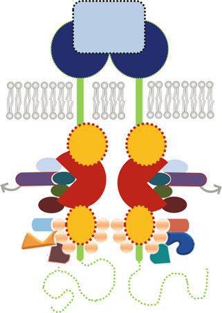
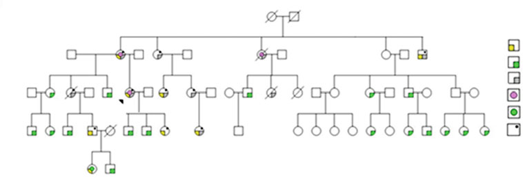
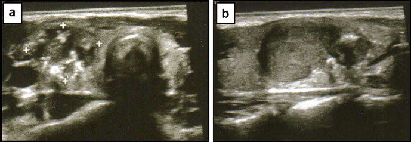
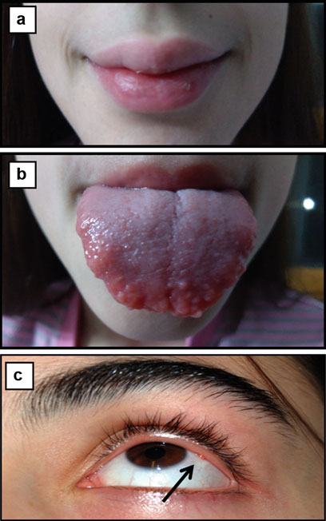
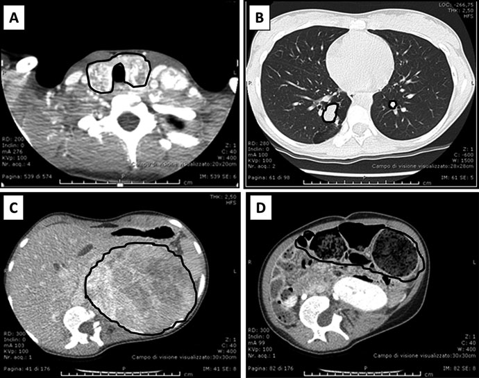
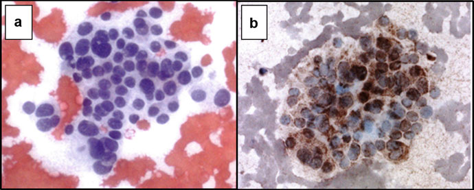
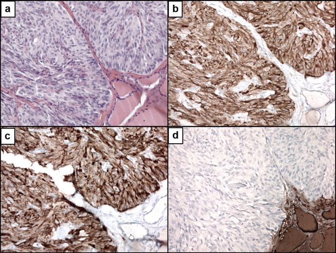
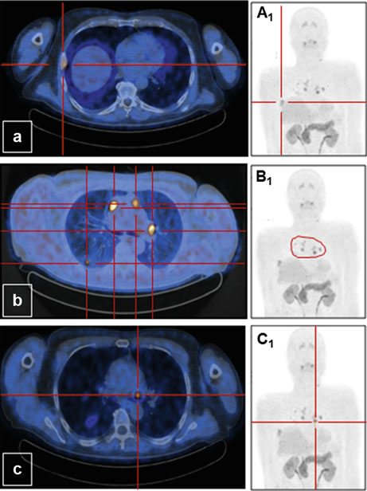
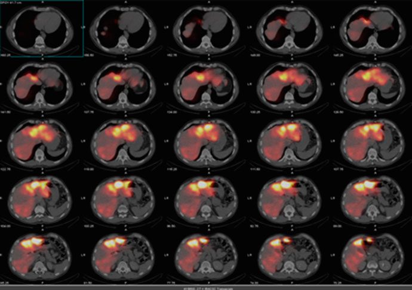
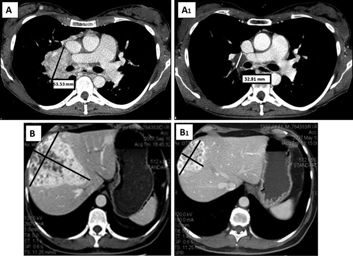

<!DOCTYPE html>
<html lang="en">
<head>
<meta charset="UTF-8">
<meta name="viewport" content="width=device-width, initial-scale=1.0">
<title>Surgical Insight Hub — Medullary Carcinoma Monograph</title>
<link href="https://fonts.googleapis.com/css2?family=Playfair+Display:wght@400;600;700&family=Source+Serif+4:ital,opsz,wght@0,8..60,300;0,8..60,400;0,8..60,600;1,8..60,300;1,8..60,400&family=JetBrains+Mono:wght@400;500&display=swap" rel="stylesheet">
<link rel="stylesheet" href="../../css/theme.css?v=4.0.0">
<link rel="stylesheet" href="../../css/shared.css">
<script>
  const savedTheme = localStorage.getItem('sih-theme') || 'light';
  if (savedTheme === 'dark') document.documentElement.setAttribute('data-theme', 'dark');
</script>
<style>
:root {
  --primary:   #4C1D95; 
  --primary-dk:#2E1065;
  --primary-lt:#F5F3FF;
  --accent:    #7C3AED;
  --accent2:   #E11D48;
  --gold:      #D97706;
  --gold-lt:   #FEF3C7;
  --red:       #E11D48;
  --red-lt:    #FFF1F2;
  --bg:        #FAFAFA;
  --bg2:       #F4F4F5;
  --border:    #E5E7EB;
  --text:      #0F172A;
  --muted:     #64748B;
  --white:     #FFFFFF;
  --sidebar-w: 320px;
}
[data-theme="dark"] {
  --bg: #0A0702;
  --bg2: #140E05;
  --text: #F3F4F6;
  --muted: #A3A3A3;
  --border: rgba(255,255,255,0.08);
  --primary-lt: #2E1065;
  --white: #140E05;
}
*,*::before,*::after{box-sizing:border-box;margin:0;padding:0;}
html{scroll-behavior:smooth;}
body{font-family:'Source Serif 4',Georgia,serif;background:var(--bg);color:var(--text);font-size:16px;line-height:1.75;}

#sidebar {
  position: fixed; top: 0; left: 0; width: var(--sidebar-w); height: 100vh;
  background: var(--primary-dk); color: #F5F3FF;
  display: flex; flex-direction: column;
  z-index: 1000; overflow: hidden;
  transform: translateX(-100%);
  transition: transform 0.3s cubic-bezier(0.4, 0, 0.2, 1);
  box-shadow: 4px 0 24px rgba(0,0,0,0.4);
}
body.sidebar-open #sidebar { transform: translateX(0); }

#sidebar-overlay {
  position: fixed; top: 0; left: 0; width: 100vw; height: 100vh;
  background: rgba(46, 16, 101, 0.7); backdrop-filter: blur(3px);
  z-index: 950; opacity: 0; pointer-events: none; transition: opacity 0.3s ease;
}
body.sidebar-open #sidebar-overlay { opacity: 1; pointer-events: auto; }

#sidebar-toggle {
  position: fixed; top: 72px; left: 24px; z-index: 900;
  background: var(--primary); color: white;
  border: none; border-radius: 30px;
  padding: 10px 18px; font-family: 'JetBrains Mono', monospace; font-size: 13px; font-weight: 600;
  letter-spacing: 0.05em; cursor: pointer; box-shadow: 0 4px 12px rgba(0,0,0,0.25);
  display: flex; align-items: center; gap: 8px; transition: all 0.2s;
}
#sidebar-toggle:hover { background: var(--accent2); transform: translateY(-2px); }

#sidebar-header{padding:20px 20px 14px;border-bottom:1px solid rgba(255,255,255,0.08);flex-shrink:0;}
#sidebar-header .logo{font-family:'Playfair Display',serif;font-size:13px;font-weight:700;color:var(--accent2);letter-spacing:0.08em;text-transform:uppercase;margin-bottom:4px;}
#sidebar-header .sub{font-size:10.5px;color:rgba(245,243,255,0.6);letter-spacing:0.04em;}
#sidebar-search{padding:10px 14px;border-bottom:1px solid rgba(255,255,255,0.05);flex-shrink:0;}
#sidebar-search input{width:100%;background:rgba(255,255,255,0.05);border:1px solid rgba(255,255,255,0.1);border-radius:6px;color:#F5F3FF;padding:6px 10px;font-size:12px;font-family:'Source Serif 4',serif;outline:none;transition:border-color 0.2s;}
#sidebar-search input::placeholder{color:rgba(245,243,255,0.4);}
#sidebar-search input:focus{border-color:var(--accent2);}
#sidebar-nav{flex:1;overflow-y:auto;padding:8px 0 20px;}
#sidebar-nav::-webkit-scrollbar{width:4px;}
#sidebar-nav::-webkit-scrollbar-thumb{background:rgba(255,255,255,0.15);border-radius:2px;}
.vol-label{font-size:9.5px;font-weight:600;letter-spacing:0.12em;text-transform:uppercase;color:var(--accent2);padding:14px 18px 4px;}
.nav-item{display:block;padding:8px 18px 8px 22px;font-size:12.5px;color:rgba(245,243,255,0.8);text-decoration:none;border-left:2px solid transparent;transition:all 0.15s;line-height:1.4;}
.nav-item:hover{color:#fff;background:rgba(255,255,255,0.03);border-left-color:rgba(225,29,72,0.5);}
.nav-item.active{color:#fff;background:rgba(255,255,255,0.06);border-left-color:var(--accent2);font-weight:600;}
.nav-item .num{font-family:'JetBrains Mono',monospace;font-size:10px;color:rgba(245,243,255,0.4);margin-right:6px;}

#main{margin-left:0; min-height:100vh;}
#hero{background:linear-gradient(135deg,var(--primary-dk) 0%,#4C1D95 60%,#2E1065 100%);color:white;padding:120px 72px 60px;position:relative;overflow:hidden;}
#hero::before{content:'';position:absolute;top:-60px;right:-60px;width:380px;height:380px;background:radial-gradient(circle,rgba(225,29,72,0.15) 0%,transparent 70%);pointer-events:none;}
#hero::after{content:'';position:absolute;bottom:0;left:0;right:0;height:3px;background:linear-gradient(90deg,var(--accent2),var(--gold),transparent);}
#hero .eyebrow{font-family:'JetBrains Mono',monospace;font-size:11px;letter-spacing:0.16em;color:var(--accent2);text-transform:uppercase;margin-bottom:14px;}
#hero h1{font-family:'Playfair Display',serif;font-size:42px;font-weight:700;line-height:1.15;margin-bottom:10px;color:#fff;}
#hero .subtitle{font-size:18px;color:rgba(255,255,255,0.8);font-style:italic;margin-bottom:28px;}
#hero .badges{display:flex;gap:10px;flex-wrap:wrap;}
#hero .badge{background:rgba(255,255,255,0.1);border:1px solid rgba(255,255,255,0.2);border-radius:20px;padding:4px 14px;font-size:12px;color:rgba(255,255,255,0.95);font-family:'JetBrains Mono',monospace;}

.content-wrap{max-width:900px;margin:0 auto;padding:40px 48px 80px;}

.callout{margin:18px 0;padding:14px 18px;border-radius:0 8px 8px 0;border-left:4px solid;font-size:14px;line-height:1.65;}
.callout .label{font-family:'JetBrains Mono',monospace;font-size:10px;font-weight:600;letter-spacing:0.12em;text-transform:uppercase;display:block;margin-bottom:4px;}
.callout.pearl{background:var(--gold-lt);border-color:var(--gold);color:var(--text);}
.callout.pearl .label{color:var(--gold);}
.callout.warn{background:var(--red-lt);border-color:var(--red);color:var(--text);}
.callout.warn .label{color:var(--red);}

@media(max-width:900px) {
  .content-wrap { padding: 20px 20px 60px; }
  #hero { padding: 80px 20px 40px; }
  #hero h1 { font-size: 30px; }
  #sidebar-toggle { top: 64px; left: 16px; }
}
</style>
<link rel="icon" type="image/png" href="../../assets/images/Surgical_Insight_Hub_Logo.png">
</head>
<body>

<nav class="nav" id="mainNav">
  <div class="nav-left">
    <a href="../../index.html" class="nav-pill">
      <div class="nav-logo-img">
        
      </div>
      <div>
        <div class="nav-brand-text">Surgical Insight Hub</div>
        <div class="nav-brand-sub">The Residency Journal</div>
      </div>
    </a>
  </div>
  <div class="nav-links-pill">
    <a href="../../index.html">Home</a>
    <a href="../../notes.html" class="active">Notes</a>
    <a href="../operative_approach.html">Playbook</a>
    <a href="../../arena.html?v=4.0.0">MCQ Arena</a>
    <a href="../../podcast.html">Podcast</a>
    <a href="../../surgery-talk.html">Surgery Talk</a>
    <a href="../../about.html">About</a>
  </div>
  <div class="nav-right">
    <button class="theme-toggle" id="themeToggle" aria-label="Toggle Theme">
      <svg id="moonIcon" viewBox="0 0 24 24" width="18" height="18"><path d="M21 12.79A9 9 0 1 1 11.21 3 7 7 0 0 0 21 12.79z"></path></svg>
      <svg id="sunIcon" style="display:none;" viewBox="0 0 24 24" width="18" height="18"><circle cx="12" cy="12" r="5"></circle><line x1="12" y1="1" x2="12" y2="3"></line><line x1="12" y1="21" x2="12" y2="23"></line><line x1="4.22" y1="4.22" x2="5.64" y2="5.64"></line><line x1="18.36" y1="18.36" x2="19.78" y2="19.78"></line><line x1="1" y1="12" x2="3" y2="12"></line><line x1="21" y1="12" x2="23" y2="12"></line><line x1="4.22" y1="19.78" x2="5.64" y2="18.36"></line><line x1="18.36" y1="5.64" x2="19.78" y2="4.22"></line></svg>
    </button>
    <a href="https://t.me/sugicalInsightHub" target="_blank" class="nav-tg-btn" title="Join Telegram">
      <svg width="18" height="18" viewBox="0 0 24 24" fill="#f0d080"><path d="M12 0C5.37 0 0 5.37 0 12s5.37 12 12 12 12-5.37 12-12S18.63 0 12 0zm5.89 8.22l-1.97 9.28c-.15.66-.54.82-1.08.51l-3-2.21-1.45 1.39c-.16.16-.3.3-.61.3l.21-3.05 5.56-5.02c.24-.21-.05-.33-.37-.12l-6.87 4.33-2.96-.92c-.64-.2-.66-.64.14-.95l11.57-4.46c.54-.19 1.01.13.83.94z"/></svg>
    </a>
    <a href="../../arena.html?v=4.0.0" class="nav-btn arena-btn">MCQ Arena</a>
  </div>
</nav>

<div class="mob-nav-overlay" id="mobNavOverlay" onclick="closeMobNav()"></div>
<div class="mob-nav-sheet" id="mobNavSheet">
  <div class="mob-nav-handle"></div>
  <a href="../../index.html" onclick="closeMobNav()">Home</a>
  <a href="../../notes.html" onclick="closeMobNav()">Notes</a>
  <a href="../operative_approach.html" onclick="closeMobNav()">Playbook</a>
  <a href="../../podcast.html" onclick="closeMobNav()">Podcast</a>
  <a href="../../surgery-talk.html" onclick="closeMobNav()">Surgery Talk</a>
  <a href="../../arena.html" onclick="closeMobNav()">MCQ Arena</a>
  <a href="../../about.html" onclick="closeMobNav()">About</a>
  <a href="https://t.me/sugicalInsightHub" target="_blank" rel="noopener" onclick="closeMobNav()" style="color: var(--brand-gold); font-weight: 800;">Join Telegram Community</a>
</div>

<button id="sidebar-toggle" onclick="toggleSidebar()">
  <span>📜</span> Chapter Navigation
</button>
<div id="sidebar-overlay" onclick="closeSidebar()"></div>

<aside id="sidebar">
  <div id="sidebar-header">
    <div class="logo">Surgical Insight Hub</div>
    <div class="sub">Thyroid Dx Textbook Series</div>
  </div>
  <div id="sidebar-search">
    <input type="text" placeholder="Search chapters..." oninput="filterNav(this.value)">
  </div>
  <nav id="sidebar-nav">
    <div class="vol-label">All 25 Endocrine Chapters</div>
    <a class="nav-item" href="endocrine_ch01_regulation_of_thyroid_function.html"><span class="num">Ch 1</span>Regulation of Thyroid Function, Synthesis, and Function of Thyroid Hormones</a>
<a class="nav-item" href="endocrine_ch02_tests_of_thyroid_function.html"><span class="num">Ch 2</span>Tests of Thyroid Function</a>
<a class="nav-item" href="endocrine_ch03_thyroid_autoantibodies.html"><span class="num">Ch 3</span>Thyroid Autoantibodies</a>
<a class="nav-item" href="endocrine_ch04_nonisotopic_thyroid_imaging.html"><span class="num">Ch 4</span>Nonisotopic Thyroid Imaging</a>
<a class="nav-item" href="endocrine_ch05_nontoxic_goiter.html"><span class="num">Ch 5</span>Nontoxic Goiter</a>
<a class="nav-item" href="endocrine_ch06_thyroid_nodule.html"><span class="num">Ch 6</span>Thyroid Nodule</a>
<a class="nav-item" href="endocrine_ch07_hashimoto_s_thyroiditis.html"><span class="num">Ch 7</span>Hashimoto´s Thyroiditis</a>
<a class="nav-item" href="endocrine_ch08_postpartum_thyroiditis_and_sil.html"><span class="num">Ch 8</span>Postpartum Thyroiditis and Silent Thyroiditis</a>
<a class="nav-item" href="endocrine_ch09_acute_and_subacute_thyroiditis.html"><span class="num">Ch 9</span>Acute and Subacute Thyroiditis</a>
<a class="nav-item" href="endocrine_ch10_classification_and_etiopathoge.html"><span class="num">Ch 10</span>Classification and Etiopathogenesis of Hypothyroidism</a>
<a class="nav-item" href="endocrine_ch11_congenital_hypothyroidism.html"><span class="num">Ch 11</span>Congenital Hypothyroidism</a>
<a class="nav-item" href="endocrine_ch12_central_hypothyroidism.html"><span class="num">Ch 12</span>Central Hypothyroidism</a>
<a class="nav-item" href="endocrine_ch13_diagnosis_and_treatment_of_hyp.html"><span class="num">Ch 13</span>Diagnosis and Treatment of Hypothyroidism</a>
<a class="nav-item" href="endocrine_ch14_graves_disease.html"><span class="num">Ch 14</span>Graves´ Disease</a>
<a class="nav-item" href="endocrine_ch15_graves_ophthalmopathy.html"><span class="num">Ch 15</span>Graves´ Ophthalmopathy</a>
<a class="nav-item" href="endocrine_ch16_treatment_of_graves_disease.html"><span class="num">Ch 16</span>Treatment of Graves´ Disease</a>
<a class="nav-item" href="endocrine_ch17_toxic_adenoma_and_multinodular.html"><span class="num">Ch 17</span>Toxic Adenoma and Multinodular Toxic Goiter</a>
<a class="nav-item" href="endocrine_ch18_pathogenesis_of_thyroid_carcin.html"><span class="num">Ch 18</span>Pathogenesis of Thyroid Carcinoma</a>
<a class="nav-item" href="endocrine_ch19_differentiated_thyroid_carcino.html"><span class="num">Ch 19</span>Differentiated Thyroid Carcinoma of Follicular Origin</a>
<a class="nav-item active" href="endocrine_ch20_medullary_carcinoma.html"><span class="num">Ch 20</span>Medullary Carcinoma</a>
<a class="nav-item" href="endocrine_ch21_anaplastic_and_other_forms_of_.html"><span class="num">Ch 21</span>Anaplastic and Other Forms of Thyroid Carcinoma</a>
<a class="nav-item" href="endocrine_ch22_new_medical_treatment_for_thyr.html"><span class="num">Ch 22</span>New (Medical) Treatment for Thyroid Carcinoma</a>
<a class="nav-item" href="endocrine_ch23_thyroid_physiology_and_thyroid.html"><span class="num">Ch 23</span>Thyroid Physiology and Thyroid Diseases in Pregnancy</a>
<a class="nav-item" href="endocrine_ch24_non_thyroidal_illness.html"><span class="num">Ch 24</span>Non-thyroidal Illness</a>
<a class="nav-item" href="endocrine_ch25_drugs_and_other_substances_int.html"><span class="num">Ch 25</span>Drugs and Other Substances Interfering with Thyroid Function</a>

  </nav>
</aside>

<main id="main">
<header id="hero">
  <div class="eyebrow">Endocrine Surgery · Chapter 20</div>
  <h1>Medullary Carcinoma</h1>
  <p class="subtitle">Structured Surgical Monograph formatted with fluid prose, inline textbook diagnostic plates, and clinical guidance.</p>
  <div class="badges">
    <span class="badge">Chapter 20</span>
    <span class="badge">Inline Plates</span>
    <span class="badge">Thyroid Dx PDF</span>
  </div>
</header>

<div class="content-wrap">
  <section class="topic">
    
    <div class="callout pearl" style="margin-bottom:28px;">
      <span class="label">🎓 TEXTBOOK MONOGRAPH — THYROID DX</span>
      Full surgical monograph extracted directly from <strong>Thyroid Pathology and Laboratory Diagnostics</strong> (Chapter 20: Medullary Carcinoma). Features complete text, formatted clinical guidance, and inline textbook figures.
    </div>
<ul style="margin:12px 0 20px 20px;">
<li style="margin-bottom:8px; line-height:1.65;"><strong>Medullary Carcinoma Rossella</strong> Elisei and Barbara Jarzab Contents</li>
</ul>
<h3 style="font-family:'Playfair Display',serif; font-size:20px; color:var(--primary); margin:32px 0 14px; border-bottom:1px solid var(--border); padding-bottom:6px;">Introduction ......................................................................................</h3>

                <div style="display:flex; gap:16px; margin:20px 0; padding:16px; border-radius:14px; border:1px solid var(--border); background:var(--bg2); align-items:center;">
                  <div style="width:180px; min-width:180px; height:140px; border-radius:10px; overflow:hidden; border:1px solid var(--border); background:#fff; display:flex; align-items:center; justify-content:center; padding:6px; flex-shrink:0;">
                    
                  </div>
                  <div style="flex:1;">
                    <div style="font-family:'JetBrains Mono',monospace; font-size:11px; font-weight:700; color:var(--accent2); text-transform:uppercase; margin-bottom:6px;">Textbook Illustration &amp; Diagnostic Plate</div>
                    <div style="font-size:13.5px; color:var(--muted); line-height:1.5;">High-resolution diagnostic plate illustrating introduction ...................................................................................... in Chapter 20.</div>
                  </div>
                </div>
<h3 style="font-family:'Playfair Display',serif; font-size:20px; color:var(--primary); margin:32px 0 14px; border-bottom:1px solid var(--border); padding-bottom:6px;">Pathogenesis .....................................................................................</h3>

                <div style="display:flex; gap:16px; margin:20px 0; padding:16px; border-radius:14px; border:1px solid var(--border); background:var(--bg2); align-items:center;">
                  <div style="width:180px; min-width:180px; height:140px; border-radius:10px; overflow:hidden; border:1px solid var(--border); background:#fff; display:flex; align-items:center; justify-content:center; padding:6px; flex-shrink:0;">
                    
                  </div>
                  <div style="flex:1;">
                    <div style="font-family:'JetBrains Mono',monospace; font-size:11px; font-weight:700; color:var(--accent2); text-transform:uppercase; margin-bottom:6px;">Textbook Illustration &amp; Diagnostic Plate</div>
                    <div style="font-size:13.5px; color:var(--muted); line-height:1.5;">High-resolution diagnostic plate illustrating pathogenesis ..................................................................................... in Chapter 20.</div>
                  </div>
                </div>
<p style="font-size:16px; line-height:1.75; margin-bottom:16px; color:var(--text);">RET Oncogene ............................................................................... RAS Oncogenes ..............................................................................</p>
<ul style="margin:12px 0 20px 20px;">
<li style="margin-bottom:8px; line-height:1.65;">Clinical Presentation .............................................................................</li>
</ul>
<p style="font-size:16px; line-height:1.75; margin-bottom:16px; color:var(--text);">Sporadic Form ............................................................................... Familial Form ................................................................................</p>
<h3 style="font-family:'Playfair Display',serif; font-size:20px; color:var(--primary); margin:32px 0 14px; border-bottom:1px solid var(--border); padding-bottom:6px;">Diagnosis ........................................................................................</h3>

                <div style="display:flex; gap:16px; margin:20px 0; padding:16px; border-radius:14px; border:1px solid var(--border); background:var(--bg2); align-items:center;">
                  <div style="width:180px; min-width:180px; height:140px; border-radius:10px; overflow:hidden; border:1px solid var(--border); background:#fff; display:flex; align-items:center; justify-content:center; padding:6px; flex-shrink:0;">
                    
                  </div>
                  <div style="flex:1;">
                    <div style="font-family:'JetBrains Mono',monospace; font-size:11px; font-weight:700; color:var(--accent2); text-transform:uppercase; margin-bottom:6px;">Textbook Illustration &amp; Diagnostic Plate</div>
                    <div style="font-size:13.5px; color:var(--muted); line-height:1.5;">High-resolution diagnostic plate illustrating diagnosis ........................................................................................ in Chapter 20.</div>
                  </div>
                </div>
<p style="font-size:16px; line-height:1.75; margin-bottom:16px; color:var(--text);">Neck Exploration ............................................................................ Fine Needle Aspiration Cytology ........................................................... Serum Calcitonin and Other Peptides ....................................................... Other Secretory Products .................................................................... RET Genetic Analysis ....................................................................... Histology ..................................................................................... Follow-Up ....................................................................................... Biochemical Monitoring ..................................................................... Imaging Techniques ......................................................................... Therapy .......................................................................................... Initial Surgical Treatment .................................................................... Gene Carrier Initial Treatment ............................................................... Further Local Treatments in Patients Not Cured by Surgery ...............................</p>
<h3 style="font-family:'Playfair Display',serif; font-size:20px; color:var(--primary); margin:32px 0 14px; border-bottom:1px solid var(--border); padding-bottom:6px;">Treatment of Distant Metastases ............................................................</h3>

                <div style="display:flex; gap:16px; margin:20px 0; padding:16px; border-radius:14px; border:1px solid var(--border); background:var(--bg2); align-items:center;">
                  <div style="width:180px; min-width:180px; height:140px; border-radius:10px; overflow:hidden; border:1px solid var(--border); background:#fff; display:flex; align-items:center; justify-content:center; padding:6px; flex-shrink:0;">
                    
                  </div>
                  <div style="flex:1;">
                    <div style="font-family:'JetBrains Mono',monospace; font-size:11px; font-weight:700; color:var(--accent2); text-transform:uppercase; margin-bottom:6px;">Textbook Illustration &amp; Diagnostic Plate</div>
                    <div style="font-size:13.5px; color:var(--muted); line-height:1.5;">High-resolution diagnostic plate illustrating treatment of distant metastases ............................................................ in Chapter 20.</div>
                  </div>
                </div>
<h3 style="font-family:'Playfair Display',serif; font-size:20px; color:var(--primary); margin:32px 0 14px; border-bottom:1px solid var(--border); padding-bottom:6px;">Treatment of Iatrogenic Hypothyroidism ...................................................</h3>

                <div style="display:flex; gap:16px; margin:20px 0; padding:16px; border-radius:14px; border:1px solid var(--border); background:var(--bg2); align-items:center;">
                  <div style="width:180px; min-width:180px; height:140px; border-radius:10px; overflow:hidden; border:1px solid var(--border); background:#fff; display:flex; align-items:center; justify-content:center; padding:6px; flex-shrink:0;">
                    
                  </div>
                  <div style="flex:1;">
                    <div style="font-family:'JetBrains Mono',monospace; font-size:11px; font-weight:700; color:var(--accent2); text-transform:uppercase; margin-bottom:6px;">Textbook Illustration &amp; Diagnostic Plate</div>
                    <div style="font-size:13.5px; color:var(--muted); line-height:1.5;">High-resolution diagnostic plate illustrating treatment of iatrogenic hypothyroidism ................................................... in Chapter 20.</div>
                  </div>
                </div>
<h3 style="font-family:'Playfair Display',serif; font-size:20px; color:var(--primary); margin:32px 0 14px; border-bottom:1px solid var(--border); padding-bottom:6px;">Treatment of Symptoms in Advanced MTC ................................................</h3>

                <div style="display:flex; gap:16px; margin:20px 0; padding:16px; border-radius:14px; border:1px solid var(--border); background:var(--bg2); align-items:center;">
                  <div style="width:180px; min-width:180px; height:140px; border-radius:10px; overflow:hidden; border:1px solid var(--border); background:#fff; display:flex; align-items:center; justify-content:center; padding:6px; flex-shrink:0;">
                    
                  </div>
                  <div style="flex:1;">
                    <div style="font-family:'JetBrains Mono',monospace; font-size:11px; font-weight:700; color:var(--accent2); text-transform:uppercase; margin-bottom:6px;">Textbook Illustration &amp; Diagnostic Plate</div>
                    <div style="font-size:13.5px; color:var(--muted); line-height:1.5;">High-resolution diagnostic plate illustrating treatment of symptoms in advanced mtc ................................................ in Chapter 20.</div>
                  </div>
                </div>
<p style="font-size:16px; line-height:1.75; margin-bottom:16px; color:var(--text);">R. Elisei (*) Endocrine Unit, Department of Clinical and Experimental Medicine, University Hospital, University of Pisa, Pisa, Italy e-mail: rossella.elisei@med.unipi.it B. Jarzab Department of Nuclear Medicine and Endocrine Oncology, Maria Sklodowska-Curie Memorial Institute – Cancer Center, Gliwice Branch, Gliwice, Poland e-mail: Barbara.Jarzab@io.gliwice.pl # Springer International Publishing AG, part of Springer Nature 2018 P. Vitti, L. Hegedüs (eds.), Thyroid Diseases, Endocrinology,</p>
<h3 style="font-family:'Playfair Display',serif; font-size:20px; color:var(--primary); margin:32px 0 14px; border-bottom:1px solid var(--border); padding-bottom:6px;">Treatment of the Other Endocrine Neoplasias in MEN 2 Syndromes ......................</h3>

                <div style="display:flex; gap:16px; margin:20px 0; padding:16px; border-radius:14px; border:1px solid var(--border); background:var(--bg2); align-items:center;">
                  <div style="width:180px; min-width:180px; height:140px; border-radius:10px; overflow:hidden; border:1px solid var(--border); background:#fff; display:flex; align-items:center; justify-content:center; padding:6px; flex-shrink:0;">
                    
                  </div>
                  <div style="flex:1;">
                    <div style="font-family:'JetBrains Mono',monospace; font-size:11px; font-weight:700; color:var(--accent2); text-transform:uppercase; margin-bottom:6px;">Textbook Illustration &amp; Diagnostic Plate</div>
                    <div style="font-size:13.5px; color:var(--muted); line-height:1.5;">High-resolution diagnostic plate illustrating treatment of the other endocrine neoplasias in men 2 syndromes ...................... in Chapter 20.</div>
                  </div>
                </div>
<ul style="margin:12px 0 20px 20px;">
<li style="margin-bottom:8px; line-height:1.65;">Conclusions ......................................................................................</li>
</ul>
<h3 style="font-family:'Playfair Display',serif; font-size:20px; color:var(--primary); margin:32px 0 14px; border-bottom:1px solid var(--border); padding-bottom:6px;">References .......................................................................................</h3>

                <div style="display:flex; gap:16px; margin:20px 0; padding:16px; border-radius:14px; border:1px solid var(--border); background:var(--bg2); align-items:center;">
                  <div style="width:180px; min-width:180px; height:140px; border-radius:10px; overflow:hidden; border:1px solid var(--border); background:#fff; display:flex; align-items:center; justify-content:center; padding:6px; flex-shrink:0;">
                    
                  </div>
                  <div style="flex:1;">
                    <div style="font-family:'JetBrains Mono',monospace; font-size:11px; font-weight:700; color:var(--accent2); text-transform:uppercase; margin-bottom:6px;">Textbook Illustration &amp; Diagnostic Plate</div>
                    <div style="font-size:13.5px; color:var(--muted); line-height:1.5;">High-resolution diagnostic plate illustrating references ....................................................................................... in Chapter 20.</div>
                  </div>
                </div>
<p style="font-size:16px; line-height:1.75; margin-bottom:16px; color:var(--text);">Abstract Medullary thyroid cancer (MTC) is a rare neuroendocrine tumor that can be either sporadic or familial. In both cases, the pathogenesis is due to constitutively activating mutations, somatic or germline, of REToncogene. The familial form of MTC can be associated with other endocrine neoplasias such as pheochromocytoma (PHEO) and/ormultiple adenomatosis of parathyroids (PTHAd). Accordingto the phenotype, three different syndromes are distinguished: the multiple endocrine neoplasia (MEN) type 2A, characterized by the association of MTC, PHEO, and PTHAd; the MEN 2B in which MTC and PHEO are associated with other nonendocrine diseases such as multiple mucosal neuromas, marfanoid habitus, and megacolon; and the familial form of MTC (FMTC) with hereditary MTC not associated with other neoplasias. The familial form, but not the sporadic, can affect children, and the RET genetic screening is the only diagnostic tool able to identify gene carriers when the tumor is not yet developed. As all thyroid tumors, MTC clinical manifestation is represented by a thyroid nodule, either isolated or in the context of a multinodular goiter. The cytological diagnosis is not always straightforward and can be facilitated by the measurement of serum calcitonin (Ct) that when >100 pg/ml is the most specific and sensitive serum marker of MTC. An early diagnosis of MTC, when the tumor is still intrathyroid, is needed to definitively cure the patient with the first surgical treatment. The presence of distant metastases at diagnosis is, together with the presence of a somatic RET mutation in the tumor tissue, the most important prognostic factor for a poor outcome. If the first surgery will not be curative, other local or systemic therapies are currently available, and their use can have a positive impact on the progression-free survival of MTC patients. Since MTC is a rare tumor, with several peculiarities such as thepossibility to be hereditary, themanagement of MTC patients should be performed in referral centers and by a multidisciplinary team. Keywords Medullary thyroid cancer · Calcitonin · RET · Multiple endocrine neoplasia type 2 · Vandetanib · Cabozantinib</p>
<h3 style="font-family:'Playfair Display',serif; font-size:20px; color:var(--primary); margin:32px 0 14px; border-bottom:1px solid var(--border); padding-bottom:6px;">Introduction</h3>

                <div style="display:flex; gap:16px; margin:20px 0; padding:16px; border-radius:14px; border:1px solid var(--border); background:var(--bg2); align-items:center;">
                  <div style="width:180px; min-width:180px; height:140px; border-radius:10px; overflow:hidden; border:1px solid var(--border); background:#fff; display:flex; align-items:center; justify-content:center; padding:6px; flex-shrink:0;">
                    
                  </div>
                  <div style="flex:1;">
                    <div style="font-family:'JetBrains Mono',monospace; font-size:11px; font-weight:700; color:var(--accent2); text-transform:uppercase; margin-bottom:6px;">Textbook Illustration &amp; Diagnostic Plate</div>
                    <div style="font-size:13.5px; color:var(--muted); line-height:1.5;">High-resolution diagnostic plate illustrating introduction in Chapter 20.</div>
                  </div>
                </div>
<p style="font-size:16px; line-height:1.75; margin-bottom:16px; color:var(--text);">Medullary thyroid carcinoma (MTC) is a very rare thyroid tumor which derives from parafollicular or calcitonin-producing C cells (Schmid 2015), which are located in the thyroid gland but are different from follicular cells. At variance with follicular cells, C cells are of neuroendocrine origin; they do not respond to thyrotropin- stimulating hormone (TSH), do not produce thyroglobulin (Tg), and are not able R. Elisei and B. Jarzab to take up iodine. However, recently a new theory about an endodermal origin of mammalian C cell progenitors has been put forward (Johansson et al. 2015; Nilsson and Williams 2016), and the expression of E-cadherin, which is consistent with an origin different from the neural crest-derived mesenchyme, seems to support this hypothesis (Kameda et al. 2007). The overall frequency of MTC is not established, but it has recently been demon- strated that it increased from 0.14 to 0.21 per 100,000 population between 1983 and 2012 in the USA, regardless of the stage at diagnosis (Randle et al. 2017). The prevalence is 5–10% of all thyroid malignancies, 0.4–1.4% of all thyroid nodules, and about 0.14% in the thyroids of subjects submitted to autopsy (Valle and Kloos 2011). Contrary to papillary thyroid carcinoma (PTC) and follicular thyroid carcino- mas (FTC), no difference in gender distribution is observed. The clinical appearance is mainly in the fourth and fifth decades with a small, but statistically significant, increase in the mean age at diagnosis from 50 to 54 years during the last 30 years (Randle et al. 2017). Children are rarely affected, and usually when this occurs, the probability of facing a familial/hereditary form is very high (Pelizzo et al. 2007). Ethnic or environmental risk factors for MTC development are unknown. At variance, the pathogenic mechanism responsible for MTC development has been recognized in the genetic alteration of the RET proto-oncogene, mainly activating point mutations (Romei et al. 2016b). RET mutations can be somatic or germline according to the sporadic or familial nature of the MTC, respectively. The sporadic form is the most prevalent (75%), while the hereditary or familial form accounts for the remaining 25%. The hereditary form is an autosomal dominant inherited syn- drome with a variable degree of expressivity and an age-related penetrance. Three different hereditary syndromes are classified according to the involved organs (Table 1): (A) multiple endocrine neoplasia type 2A (MEN 2A), characterized by the presence of MTC associated with pheochromocytoma (PHEO) (50% of cases) and/or multiple adenomatosis or hyperplasia of parathyroids (PTHAd) (30% of cases) (Keiser et al. 1973) and in about 10% of cases also with an interscapular itching cutaneous lichen amyloidosis that, when present, is diagnostic of MEN 2A; (B) multiple endocrine neoplasia type 2B (MEN 2B), characterized by MTC, PHEO (50% of cases), mucosal neuromas particularly of the conjunctiva and/or tongue (98–100% of cases), ganglioneuromatosis (98% of cases), and an almost invariable typical marfanoid habitus, with long arms and legs in comparison to the trunk of the body (Cunliffe et al. 1970); (C) familial medullary thyroid carcinoma (FMTC),</p>
<h3 style="font-family:'Playfair Display',serif; font-size:20px; color:var(--primary); margin:32px 0 14px; border-bottom:1px solid var(--border); padding-bottom:6px;">Table 1 Prevalence of the different components of the multiple endocrine neoplasia type 2 (MEN 2)</h3>

                <div style="display:flex; gap:16px; margin:20px 0; padding:16px; border-radius:14px; border:1px solid var(--border); background:var(--bg2); align-items:center;">
                  <div style="width:180px; min-width:180px; height:140px; border-radius:10px; overflow:hidden; border:1px solid var(--border); background:#fff; display:flex; align-items:center; justify-content:center; padding:6px; flex-shrink:0;">
                    
                  </div>
                  <div style="flex:1;">
                    <div style="font-family:'JetBrains Mono',monospace; font-size:11px; font-weight:700; color:var(--accent2); text-transform:uppercase; margin-bottom:6px;">Textbook Illustration &amp; Diagnostic Plate</div>
                    <div style="font-size:13.5px; color:var(--muted); line-height:1.5;">High-resolution diagnostic plate illustrating table 1 prevalence of the different components of the multiple endocrine neoplasia type 2 (men 2) in Chapter 20.</div>
                  </div>
                </div>
<p style="font-size:16px; line-height:1.75; margin-bottom:16px; color:var(--text);">syndromes MTC + CCH PHEO PTHAd CLA Marfanoid habitus Mucosal neuromas Scheletric alterations Megacolon MEN 2A 100% 45% 30% 30% MEN 2B 100% 50% 100% 98–100% 40% 50% FMTC 100% MTC medullary thyroid cancer, PHEO pheochromocytoma, PTHAd parathyroid adenomas, MEN multiple endocrine neoplasia, FMTC familial medullary thyroid cancer Medullary Carcinoma which is characterized by the presence of an inheritable MTC with no association with other endocrine neoplasias (Farndon et al. 1986). The biological behavior of MTC is more aggressive when compared with that of the other well-differentiated thyroid carcinomas (i.e., PTC and FTC) even though it is not as aggressive as that of anaplastic carcinomas (ATC). A 10-year survival of about 50% in MTC patients is reported in several series. Both the cure and survival of these patients are positively affected by an early diagnosis (Pelizzo et al. 2007). A recent study showed that the 5-year disease-specific survival improved from 86% to 89%, and this improvement was particularly true for MTC patients with regional (from 82% to 91%) and distant (from 40% to 51%) metastases. The most favored hypothesis for this improvement is the increase in the percentage of cases treated with a more appropriate and extensive primary surgery, including thyroidectomy and lymphadenectomy (Randle et al. 2017).</p>
<h3 style="font-family:'Playfair Display',serif; font-size:20px; color:var(--primary); margin:32px 0 14px; border-bottom:1px solid var(--border); padding-bottom:6px;">Pathogenesis</h3>
<p style="font-size:16px; line-height:1.75; margin-bottom:16px; color:var(--text);">While risk factors for the development of MTC are unknown, the molecular patho- genesis is almost completely clarified. In the hereditary form, RET oncogene is the major player. So far, 98% of kindred with this disease are characterized by the presence of a germline RET mutation, and only 2% are still orphan of genetic alterations. RET is also involved, at the somatic level, in sporadic MTC cases. Somatic RAS mutations represent the second most important genetic alteration in sporadic MTC (Ciampi et al. 2013). Currently, only few other private mutations have been reported (Heilmann et al. 2016), and 30% of sporadic cases are still orphans for genetic alterations. RET Oncogene The RET proto-oncogene is a 21-exon gene located on chromosome 10q11-2 that encodes for a tyrosine kinase (TK) transmembrane receptor, the activation of which induces the activation of downstream signaling pathways (Romei et al. 2016b). RET is expressed in a variety of neuronal cell lineages, including thyroid C cells and the adrenal medulla. Activating mutations can determine a ligand-independent dimer- ization of ret protein that induces the autophosphorylation of the TK domain with a subsequent stimulation of proliferation and tumoral transformation of ret protein- expressing cells (Romei et al. 2016b) (Fig. 1). In 1993, two independent groups reported that activating germline point mutations of the RET proto-oncogene are causative events in MEN 2A and in FMTC (Donis- Keller et al. 1993; Mulligan et al. 1993). One year later, also MEN 2B was found associated with germline RET proto-oncogene mutations (Eng et al. 1994). Over the years, many RET mutations have been found to be associated with MEN 2, and currently the genotype-phenotype correlation is almost completely clarified (Table 2). R. Elisei and B. Jarzab About 98% of MEN 2A are associated with RET mutations in the cysteine-rich extracellular domain and in particular in codons 609, 611, 618, 620, and 634 of exons 10 and 11. Germline mutations at codon 634 of exon 11 account for 85% of MEN 2A cases. Interestingly, mutation of cysteine 634 significantly correlates with the presence of PHEO, PTHAd, and cutaneous lichen amyloidosis (CLA) (Eng et al. 1996; Raue and Frank-Raue 2009) (Fig. 2). A specific mutation in exon 16, M918T, is almost invariably associated with MEN 2B. The M918T mutation is associated with a very aggressive biological behavior of the tumor that commonly develops a few years after birth. Other mutations rarely associated HR SR PBR AR P P P P P P P MAPK pathway PI3K-AKT pathway P P Growth,  Survival, Proliferation, Migration, Angiogenesis HR SR PBR AR N-tl C-tl ADP N-tl C-tl ADP P P P Cell membrane Extracellular domain GDNF Artemin Persephin Neurturin Intracellular domain N-tl:  N-terminal lobe; C-tl: C-terminal lobe; PBR: Phosphate binding region; AR: Adenine Region; SR: Sugar Region; HR: Hydrophobic Region; ATP: Adenosine TriPhosphate; ADP: Adenosine DiPhosphate; P:Phosphorilated tyrosine residues; GDNF: Glial cell line-derived neurotrophic factor Fig. 1 Schematic representation of ret receptor encoded by RET oncogene. The receptor is a tyrosine kinase transmembrane receptor. Its physiological activation, due to the binding with several different ligands (i.e., GDNF, neurturin, artemin, and perseptin), stimulates cell growth, angiogen- esis, and proliferation and promotes cell migration and survival through the activation of intracel- lular pathways. The constitutive activation of ret receptor, due to activating mutations, is responsible of an uncontrolled cell stimulation leading to tumor transformation Medullary Carcinoma with MEN 2B have been reported at codon 883 of exon 15, but MTC of A883F carriers seems to have a more indolent course compared with that of M918Tcarriers (Mathiesen et al. 2017). A double RET mutation at codons 804 and 904 has also been described (Menko et al. 2002) in MEN 2B. In FMTC, the mutations are widely distributed among the five cysteine codons 609, 611, 618, 620, and 634 but also in other non-cysteine codons, such as codon 804 in exon 14, 891 in exon 15, and others. A different biological behavior, characterized by a lower aggressiveness and an older mean age at diagnosis, has been described for FMTC associated with mutations in non-cysteine codons with respect to both MEN 2A and FMTC with mutations in cysteine codons (Raue and Frank-Raue 2009). In about 4–10% of MEN 2A or FMTC patients, and in about 95% of those with MEN 2B, the germline RET mutation is a “de novo” mutation as demonstrated by the negative finding of the RET genetic analysis in the patients’ parents. In such cases, the mutation is usually located in the allele inherited from the patients’ father (Schuffenecker et al. 1997). A subgroup of RET variants of unknown significance (VUS) have been sporadi- cally reported in a few families. Their transforming ability is questionable and in many cases not demonstrated in in vitro experiments. The pathogenic role of VUS has not been demonstrated, and subjects carrying these alterations must be carefully moni- tored but not necessarily treated if there is no evidence of disease (Cosci et al. 2011; Lebeault et al. 2017).</p>
<h3 style="font-family:'Playfair Display',serif; font-size:20px; color:var(--primary); margin:32px 0 14px; border-bottom:1px solid var(--border); padding-bottom:6px;">Table 2 Classification of RET mutations according to their degree of aggressiveness and pene-</h3>
<p style="font-size:16px; line-height:1.75; margin-bottom:16px; color:var(--text);">trance of the different MEN 2 components RET mutation Exon MTC risk level PHEO PTHAd CLA M918T HST +++  N A883F H +++  N C634F/G/R/S/W/Y H +++ ++ Y C609F/G/R/S/Y MOD +/++ + N C611F/G/S/Y/W MOD +/++ + N C618F/R/S MOD +/++ + N C620F/R/S MOD +/++ + N C630R/Y MOD +/++ + N D631Y MOD +++  N K666E MOD +  N E768D MOD   N L790F MOD +  N V804L MOD + + Y V804M MOD + + N S891A MOD + + N G533C MOD +  N R912P MOD   N HST highest risk, H high risk, MOD moderate risk (according to ATA 2015 guidelines) to develop MTC, + = 10%, ++ = 20–30%, +++ = 50% probability to develop PHEO and/or PTHAd, MTC medullary thyroid cancer, PHEO pheochromocytoma, PTHAd parathyroid adenomas, CLA cuta- neous lichen amyloidosis, N negative occurrence, Y positive occurrence R. Elisei and B. Jarzab I II III IV V</p>
<ul style="margin:12px 0 20px 20px;">
<li style="margin-bottom:8px; line-height:1.65;"><strong>10 11 12</strong> 13 14 15 16 17 18 19</li>
</ul>
<p style="font-size:16px; line-height:1.75; margin-bottom:16px; color:var(--text);">RET positive RET negative Pheochromocytoma (PHEO) Cutaneous Lichen Amyloidosis (CLA) C cell hyperplasia (CCH) Medullary thyroid cancer (MTC) * Subject I1 was died before screening but referred to be affected with CLA by the index case Subject III4 is the index case (first member of the family to be diagnosed) and was affected with CLA, MTC and PHEO * Fig. 2 Genealogical tree of a big family with a MEN 2A syndrome due to a C634Y germline RET mutation. The Mendelian autosomal transmission is clearly demonstrated by the evidence that all five generations are interested by the disease and that males and females are equally affected. The tree clearly shows the different penetrances of the components of the syndrome in RET-positive cases with a 100% penetrance of MTC, 50% penetrance of PHEO, and 30% penetrance of CLA and, in this family, no cases with parathyroid adenomas. A late onset of these pathologies cannot be excluded Medullary Carcinoma Somatic RET mutations are found in about 40% of sporadic cases of MTC mainly consisting of a M918T mutation in exon 16, which is the same mutation seen in MEN 2B (Elisei et al. 2007). Other somatic RET mutations, and some small deletions and/or insertions, have been reported in other codons, especially in advanced MTC that are somatically RET mutated in >80% of cases (Heilmann et al. 2016; Romei et al. 2016a). Several studies indicate that MTC patients with somatic RET mutations have an advanced disease at diagnosis and a poorer prog- nosis than those with no evidence of RET mutations (Elisei et al. 2008; Moura et al. 2009). A positive correlation has also been demonstrated between the presence of a somatic RET mutation and a higher Ki 67 proliferation index (Mian et al. 2011). Several RET gene polymorphisms have been found, both in MTC-affected patients and in normal subjects. It is still controversial whether some of these polymorphisms have a higher prevalence in MTC compared with normal individuals or if they play any role in the development of MTC (Elisei et al. 2004b; Colombo et al. 2015; Lebeault et al. 2017). RAS Oncogenes About 15% of RET-negative MTC carry a somatic RAS mutation, mainly H- and K-RAS activating point mutations. With very few exceptions, RET and RAS muta- tions are mutually exclusive. MTC with RAS mutations appear to have a less aggressive biological behavior (Ciampi et al. 2013; Simbolo et al. 2014). Although several studies with advanced and very sensitive techniques have already been performed, no other oncogenes have been found to be mutated. So far, only few alterations, mainly copy number variations, have been reported in some genes, the pathogenic role of which is still to be defined (Heilmann et al. 2016).</p>
<ul style="margin:12px 0 20px 20px;">
<li style="margin-bottom:8px; line-height:1.65;">Clinical Presentation</li>
</ul>
<p style="font-size:16px; line-height:1.75; margin-bottom:16px; color:var(--text);">As previously noted, MTC can be either sporadic or familial. The familial medical history is of great help in identifying hereditary forms, as is the coexistence – in the same patient or in other members of the family – of other endocrine neoplasias, such as PHEO and/or PTHAd, which can be associated with MTC in the hereditary forms (Wells et al. 2013). Presently, RET screening allows making a definitive diagnosis based on the presence of a germline RET mutation and even discovers the hereditary nature of about 10% of cases presenting as apparently sporadic (Romei et al. 2011). Sporadic Form The most common clinical presentation of sporadic MTC is a thyroid nodule, either single or belonging to a multinodular goiter. No specific clinical manifestations or symptoms are present in patients affected with MTC, but in rare cases, diarrhea R. Elisei and B. Jarzab and/or flushing syndrome can be present in very advanced cases with elevated serum Ct levels (Alam 1994; Hannah-Shmouni et al. 2016). Thyroid function is usually normal, and suspicion of malignancy, but not specifically of MTC, is due to the presence of a suspicious nodule at neck ultrasound (US). Importantly, the US features of MTC nodules are not specific for this tumor but very similar to those of other thyroid cancer histotypes (Lee et al. 2010) (Fig. 3). Familial Form The clinical appearance of MTC in the familial/hereditary form is that of nodular thyroid disease, similar to that of the sporadic form with the exception that it is usually bilateral, multicentric, and almost invariably associated with C cell hyper- plasia (Schmid 2015). Very rarely MEN 2A and MEN 2B syndromes are diagnosed because the PHEO or PTHAd are discovered first, since the latency period of development is much longer for these two diseases than for MTC. About 30% of patients with MEN 2A also develop hyperparathyroidism due to the multiple PTHAd (Alevizaki and Saltiki 2015). The mean age at diagnosis is the third to fourth decades of life. The clinical findings are completely similar to those of the sporadic form of hyperparathyroidism, and very often there are no specific symptoms. At variance with the sporadic form, multiple hyperplasia or adenomatosis is most commonly found. Hyperparathyroid- ism has only occasionally been reported in patients with MEN 2B (Cunliffe et al. 1970). About 50% of MEN 2A and 40–45% of MEN 2B patients develop PHEO, which shares the same characteristics in both syndromes (Mucha et al. 2017). At variance with the sporadic form, the adrenal tumors of MEN 2 syndromes are usually bilateral and multicentric but not necessarily synchronous, and a mean period of 10 years usually exists between the developments of the tumor in the two adrenal glands. Fig. 3 Neck ultrasound imaging of a medullary thyroid cancer (MTC): cross (panel a) and longitudinal (panel b) sections of an intrathyroidal MTC. The ultrasound characteristics are clearly and highly suspicious for malignancy, but no specific features for MTC do exist to induce a specific presurgical suspicion Medullary Carcinoma MEN 2B patients may be easily recognized at physical examination by the typical marfanoid habitus characterized by thin and inappropriately long extremities and pectus excavatum. In a minority of cases, severe skeletal alterations, such as shorter legs and/or scoliosis of the vertebral spine and/or poli- or oligodactylies, may be present (Brauckhoff et al. 2004). Thick lips are frequently observed in the presence of mucosal and/or conjunctival neuromas and are usually clearly visible when the eyes and mouth are explored (Fig. 4). The disease is very aggressive, and frequently children less than 5 years have already an advanced disease at the time of diagnosis (Fig. 5). Gastrointestinal disorders including obstructive symptoms, cramping, and diarrhea are frequently observed in early childhood. These symptoms are mainly related to the presence of megacolon, owing to the intestinal neuromas throughout the intestinal tract (Erdogan et al. 2006) (Fig. 5, panel a). An association with CLA, a characteristically pigmented and itchy skin lesion specifically localized in the interscapular region of the back, has been reported in less than 10% of MEN 2A families (Ceccherini et al. 1994). The development of CLA may precede the development of MTC, and when present, it is almost invariably diagnostic of MEN 2A. Fig. 4 Typical and pathognomonic face features of a multiple endocrine neoplasia type 2B patient. (Panel a) thick lips; (panel b) macroglossia and multiple mucosal neuromas of the tongue; (panel c) conjuntival neuroma (indicated by the arrow) R. Elisei and B. Jarzab</p>
<h3 style="font-family:'Playfair Display',serif; font-size:20px; color:var(--primary); margin:32px 0 14px; border-bottom:1px solid var(--border); padding-bottom:6px;">Diagnosis</h3>
<p style="font-size:16px; line-height:1.75; margin-bottom:16px; color:var(--text);">An early diagnosis, likely when the tumor is still intrathyroidal, is highly desirable since this represents the only possibility to cure MTC patients. In the majority of cases, especially when sporadic, the clinical presentation of MTC is a thyroid nodule, which may be solitary or appear in the context of a multinodular goiter. Thus, the diagnosis is performed through the typical diagnostic work-up of thyroid nodules (Hegedus 2004). Neck Exploration Physical examination of the neck rarely offers any specific diagnostic advantage especially today when the majority of nodules are impalpable and often incidentally discovered by neck US performed on other indications (Acar et al. 2014). Fig. 5 CTscans with contrast medium of a multiple endocrine neoplasia 2B patient before surgery: (panel a) neck scan showing the bilateral involvement of the thyroid gland; (panel b) lung scan showing multiple and bilateral pulmonary metastases; (panel c) huge pheochromocytoma of the left adrenal gland; (panel d) severe and abnormal dilatation of the colon (i.e., megacolon) frequently present in MEN 2B patients Medullary Carcinoma Thyroid US usually shows a hypoechoic nodule, sometimes with micro- calcifications and other suspicious features for malignancy (Fig. 3). However, the echographic pattern is similar to those of other thyroid malignancies (Lee et al. 2010). As for all thyroid nodular diseases (Gharib et al. 2016), thyroid scintiscan is not indicated unless TSH is low or low normal and a hyperfunctioning thyroid nodule or multinodular goiter is suspected. This way superfluous FNAB can be avoided, and the extension of a large goiter and its eligibility for radioiodine therapy can be evaluated (Hegedus et al. 2003). In any case, MTC nodule will appear as a “cold” nodule with no difference from any other thyroid malignancies. Fine Needle Aspiration Cytology US-guided fine needle aspiration cytology (FNAC) is considered the gold standard for the presurgical diagnosis of thyroid nodules. However, a recent multicentric international study, involving 12 different referral centers located in 7 different countries, demonstrated that FNAC was able to make a correct presurgical diagnosis of MTC in <50% of 313 analyzed cases. This limit of FNAC had a negative impact when planning the extension of the surgical treatment that was incorrect or inade- quate in >60% of cases (Essig et al. 2013). Over the years, several series showing a high percentage of FNAC failure in making a presurgical diagnosis of MTC have been reported (Pacini et al. 1994; Rieu et al. 1995; Niccoli et al. 1997; Forrest et al. 1998). The most plausible reasons for this inadequacy are related to the not invari- ably well-defined cytological aspects of MTC cells which in certain cases can be misinterpreted. The final cytology may even indicate a benign, an indeterminate, or even a PTC or FTC lesion (Essig et al. 2013). The results of FNAC could be significantly improved by performing immunocy- tochemistry for Ct (Fig. 6). This is, however, not a standard procedure and only done in selected cases, mainly in those with known elevated serum Ct levels. Sometimes cytologically negative results might be due to the fact that MTC could be present in one nodule, in the context of a multinodular goiter, not submitted to FNAC. In this condition, serum Ct measurement is more reliable, since it is elevated even in the presence of microfoci of MTC (Pacini et al. 1994; Vierhapper et al. 1997). Serum Calcitonin and Other Peptides Calcitonin (Ct) is the most specific and sensitive MTC marker, both before and after thyroidectomy (Melvin and Tashjian 1968). It is a small polypeptide hormone of 32 amino acids normally produced almost exclusively by C cells. The release and secretion of Ct are mainly regulated by extracellular calcium concentration. Other substances, such as pentagastrin, B-adrenergic agonists, growth hormone-releasing hormone, and other gastrointestinal peptides (Emmertsen et al. 1980), can stimulate Ct release from C cells. R. Elisei and B. Jarzab In 1968, 10 years after the recognition of MTC as a distinct histological type of thyroid carcinoma, high levels of serum Ct were demonstrated both in the tumor and the serum of patients with MTC (Melvin and Tashjian 1968). Elevated basal levels of serum Ct (>100 pg/ml) are diagnostic of MTC (Costante et al. 2007). However, there are other conditions, both physiological and pathological, in which basal levels of serum Ct may be found to be elevated and a differential diagnosis needs to be considered (Elisei 2008) (Table 3). Since the release of Ct in these diseases does not appear to be regulated by the same factors that stimulate Ct release in the C cells, differential diagnosis can be done by performing a stimulation test with a calcium infusion (25 mg/Kg of calcium gluconate or 2.5 m/Kg of calcium element, diluted up to 50 ml with saline solution ev in 5 min) that will provide different levels of stimulations depending on the disease (Fugazzola 2013). Routine measurement of serum Ct in nodular thyroid diseases allows the preop- erative diagnosis of unsuspected sporadic MTC (Pacini et al. 1994; Rieu et al. 1995; Fig 6 Cytological smears of a medullary thyroid cancer: (panel a) standard papanicolau staining of C cells showing a typical “salt-and-pepper” chromatin and plasmacytoid cytoplasm (40); (panel b) immunocytochemistry for calcitonin showing a typical cytoplasmic granular positivity (40)</p>
<h3 style="font-family:'Playfair Display',serif; font-size:20px; color:var(--primary); margin:32px 0 14px; border-bottom:1px solid var(--border); padding-bottom:6px;">Table 3 Other causes of hypercalcitoninemia: pathologies and interferences</h3>
<p style="font-size:16px; line-height:1.75; margin-bottom:16px; color:var(--text);">Nonthyroidal diseases Thyroidal diseases Interferences/technical problems Small cell lung carcinomaa Lymphocytic thyroiditisb Heterophilic antibodies Breast cancera Micropapillary thyroid cancerb Too high sensitivity of the assay Other neuroendocrine tumors Macrocalcitonin Chronic renal failure Chronic therapies with omeprazole Pernicious anemia Zollinger’s syndrome Pancreatitis aUsually when the tumoral disease is very advanced bIn these pathologies, the hypercalcitoninemia is due to the presence of an accompanying C cell hyperplasia Medullary Carcinoma Niccoli et al. 1997; Vierhapper et al. 1997; Kaserer et al. 1998; Ozgen et al. 1999; Hahm et al. 2001). Calcitonin screening determines the early diagnosis of MTC, usually when the tumor is still at stage I, thus favoring successful surgical treatment. A comparison of the outcome of two groups of patients, one diagnosed by serum Ct screening and the other by cytology or histology, has demonstrated a significantly better prognosis of the first group (Elisei et al. 2004a). However, despite this evidence, there is still a lot of resilience in performing routine serum Ct measurement in nodular thyroid disease, and when comparing current guidelines, it is clear that there is no consensus (Wells et al. 2015). There have been major concerns in applying this screening. As for cost-benefit, this has recently been demonstrated to be acceptable (Cheung et al. 2008), and the risk of false positives, especially at medium-low levels (<100 pg/ml), can be overcome with the calcium stimulation test. Moreover, if serum Ct is elevated, but <100 pg/ml, it should be interpreted as a potential MTC, and further diagnostic procedures, such as immunocytochemistry for Ct on cytological smears (Fig. 6), and/or the Ct measurement in the washout of the needle used for the puncture of a suspected thyroid nodule (Boi et al. 2007), should be carried out. The latter approach is of particular diagnostic utility to ascertain the nature of neck lymph nodes, especially before thyroidectomy, to plan the most appropriate therapeutic strategies. Other Secretory Products Although Ct is the most reliable tumor marker due to its high sensitivity and specificity, there are some other proteins that are released by the malignant C cell. Serum carcinoembryonic antigen (CEA) is usually elevated when the disease is disseminated and distant metastases are present (Rougier et al. 1983). Cases with advanced local disease, demonstrated at neck US and associated with elevated serum CEA levels, should be studied by computerized tomography (CT) to better evaluate the relationship of the disease with the gross veins, trachea, and esophagus and plan the most appropriate surgical treatment (Kodama et al. 1980; Jackson et al. 1987). However, CEA is most useful in monitoring the progression of the disease since its level increases when the burden of the disease is rapidly increasing. Serum chromogranin-A may also be elevated in patients with MTC but it is highly unspecific (Baudin et al. 2001). Recently, a comparable diagnostic accuracy, as with serum Ct, has been demonstrated for serum procalcitonin (Machens et al. 2014), but further studies are needed before including this measurement in clinical practice. As in many other neuroendocrine tumors, somatostatin (SMS), calcitonin gene- related peptide (CGRP), vasoactive intestinal peptide (VIP), neuron-specific enolase (NSE), and other neuroendocrine substances may be produced abnormally, but none of these peptides are useful for diagnosis of MTC (Pacini et al. 1991; Barakat et al. 2004). At variance, some of them, such as CGRP, VIP, serotonin, and prostaglan- dins, together with serum Ct may contribute to flushing and diarrhea syndrome (Jaffe 1979; Wyon et al. 1998). R. Elisei and B. Jarzab RET Genetic Analysis Since at least 5–7% of apparently sporadic MTC are found to be hereditary, not only the family history should be carefully considered, with particular regard to the occurrence of PHEO and PTHAd in other family members, but genetic screening for germline RET mutations is always indicated (Elisei et al. 2013a). This finding is of great relevance for the early discovery of the other gene carriers who are unaware of their condition. At present, RET screening is mandatory in documented hereditary cases to allow for screening of all first-degree relatives. Screening for RET Gene Mutations in Apparently Sporadic Cases One single blood sample collected in EDTA, or even salivary smears, is sufficient for DNA extraction and genetic analysis. If a RET mutation is identified, the case can be reclassified as hereditary despite the absence of a family history. All the first-degree relatives (i.e., parents, brothers and sisters, sons and daughters) should be invited for a screening test (Elisei et al. 2013a). Although not yet a standard of care procedure, RET gene analysis should be performed also in the tumor tissue, both for its prognostic value and for a more accurate tissue characterization that could turn out to be very useful if a drug, specifically aimed at inhibiting the altered RET gene, should become necessary. Screening for RET Gene Mutations in MEN 2 Family Members The pathogenic role of RET mutations in MEN 2 provides the rationale for screening family members of any affected proband carrying a germline mutation. From a practical point of view, once the germline RET mutation of the index case has been recognized, blood is taken from all first-degree family members. Informed consent and an adequate genetic counseling are requested. This allows the identifi- cation of “gene carriers” at a time when they are still clinically unaffected or at an early stage of the disease. It also has the advantage of excluding “nongene carriers” from further testing for life. Although the presence of a germline RET mutation is diagnostic of the MEN 2 syndrome, gene carriers must be submitted to further clinical and biochemical evaluations to ascertain the actual development of the MTC and its extension, if already present. The involvement of other endocrine organs must also be assessed (Elisei et al. 2013a). Histology Under macroscopic examination, MTC shows a hard and firm consistency and is either chalky white or red in color on cross section (Schmid 2015). Histologically, MTC is pleomorphic with spindle-shaped or rounded cells characteristically orga- nized in a nested pattern. Mitoses are not very frequent, nuclei are usually uniform, and the eosinophilic cytoplasm is characterized by the presence of secretory gran- ules. Deposits of amyloid substance are frequently (60–80%) observed between tumor cells (Sletten et al. 1976). Medullary Carcinoma Sometimes it may be difficult to distinguish MTC from ATC, Hürthle cell carcinomas, or insular carcinomas, especially if pseudopapillary elements or giant cells are present. Positive immunohistochemistry for Ct is diagnostic for MTC (Fig. 7). Immunohistochemistry for chromogranin-A and CEA may also be useful, especially in those few cases with low or no production of Ct (Giovanella et al. 2008; Trimboli and Giovanella 2015). Histopathological description of MTC should include the number and the distri- bution of tumor foci, as well as the simultaneous presence of C cell hyperplasia. This information is of practical usefulness because bilaterality, multicentricity, and C cell hyperplasia are considered the histological hallmarks of the hereditary MTC forms (Schmid 2015). Regarding C cell hyperplasia diagnosis, the most widely accepted definition is when >50 C cells per single low-power field are found, even though this criterion may not be respected in the presence of cytologically evident atypias (LiVolsi 1997). Diffuse, focal, or nodular C cell hyperplasia can be distinguished on the basis of the number and distribution of C cells. It is likely that they represent progressive stages through which the normal C cell is transformed into a malignant cell. While there is general agreement in considering C cell hyperplasia the pre- neoplastic lesion of the hereditary form of MTC, little is known about the Fig. 7 Histology of a medullary thyroid cancer: (panel a) standard hematoxylin/eosin staining (20); (panel b) positive immunohistochemistry for calcitonin (20); (panel c) positive immuno- histochemistry for chromogranin (20); (panel d) negative immunohistochemistry for thyroglob- ulin (20) R. Elisei and B. Jarzab relationship between C cell hyperplasia and the sporadic form. Nevertheless, about 30% of sporadic MTC are associated with C cell hyperplasia (Nikiforov et al. 2012). A mixed form of MTC and PTC is also described (Matias-Guiu 1999). It is characterized by the simultaneous presence of parafollicular and follicular cell features, with positive immunohistochemistry for both Ct and Tg. In this respect, it is worth noting that the occurrence of MTC and PTC in the same thyroid gland seems to be quite frequent (Biscolla et al. 2004; Wong et al. 2012). It is still questioned whether the mixed MTC/PTC is a genuine separate histological entity, originating from an ancestral stem cell able to differentiate into both follicular and parafollicular cells, or the consequence of the collision of two distinct tumors, MTC and PTC, originating in the same thyroid gland. The latter of the two hypotheses seems to be supported by evidence of the two entities not sharing common classical point mutations (Ciampi et al. 2017). Follow-Up After the initial therapy (see the following paragraph), serum basal and stimulated Ct should be measured to verify the completeness of the treatment. Neck US and other imaging techniques may be useful to map the metastatic lesions, but they are almost invariably negative when serum Ct is <150 pg/ml. Most important in the follow-up of MTC patients is the doubling time of both serum Ct and CEA (Gawlik et al. 2010) for predicting the outcome of the disease. Biochemical Monitoring Initial postsurgical control of serum Ct should be done 3 months after surgery and include physical examination, neck US, and measurement of serum FT3, FT4, TSH, and CEA. Due to the prolonged half-life, if performed too early, measurement of serum Ct may be misleading, especially if a high serum concentration was present preoperatively (Fugazzola et al. 1994). If basal Ct is undetectable, patients have a high probability of being cured, with an estimated 10% risk of recurrence in the long term (Pellegriti et al. 2003). This probability is reduced to 3.3% in patients with a negative postoperative stimulation test (Franc et al. 2001). The follow-up of these “negative” patients should include Ct measurement on a 12–18-month basis, together with a neck US. In patients with undetectable levels of serum Ct, measure- ment of CEA is not necessary, unless undifferentiated MTC is suspected (Trimboli and Giovanella 2015). About 50% of patients not cured at surgery have no evidence of metastatic disease when studied with the traditional imaging techniques. In this condition of “biochem- ical disease,” the most widely accepted strategy is to “wait and see.” A detectable serum Ct level is in fact compatible with long-term survival, during which serum Ct may remain stable or slowly increase over time. Such patients are monitored at intervals of 6–12 months. A rapid increase of serum Ct and/or CEA indicates a poor Medullary Carcinoma prognosis, both for recurrence and for death, especially if the doubling time is <0.5–1 year (Meijer et al. 2010). Facing this scenario, imaging control must be intensified to verify the progression of the disease and to decide if it is time to initiate active therapy (Schlumberger et al. 2012a). Imaging Techniques Because serum Ct is a very sensitive and specific MTC marker, if detectable after surgery, it is highly suggestive of persistent disease. In this case, serum CEA should be monitored because both high and increasing levels are strongly suggestive of progressive disease (Busnardo et al. 1984). In the majority of cases, the challenge is to find the source of production of Ct and CEA, and there is evidence that if serum Ct is <150 pg/ml, it is very unlikely to find this source with the current imaging techniques. No single sensitive diagnostic imaging method can reveal all MTC recurrences or metastases. A neck US is the first localization technique to be performed due to the high likelihood of local recurrence and cervical node metastases. Depending on the region to be explored, CT scan, MRI, US, or scintigraphy may be the most appropriate to use (Giraudet et al. 2007). Other imaging techniques such as octreoscan, 123-meta-iodobenzylguanidine (MIBG), and 18-fluorodesossiglucose (FDG)-positron emission tomography (PET) may be useful although at present they do not appear to be particularly sensitive, especially in the presence of micrometastases and low levels of serum Ct (Baudin et al. 1996; Giraudet and Taieb 2017). Selective catheterization for venous sampling is an invasive and relatively insensitive technique and therefore no more applied in clinical practice. New tracers for PET/CT scan are emerging since the sensitivity of PET, using (18)F-fluorodihydroxyphenylalanine (18F-DOPA) (Fig. 8) or 68Ga-labeled somatostatin analogues (68Ga-DOTATATE or DOTATOC), is greater than that of older radiotracers (Skoura 2013). Therapy Medullary thyroid cancer, both sporadic and familial, is a challenging tumor at high risk not to be successfully cured and to be lethal within 5–10 years in 50% of cases with distant metastases at the time of diagnosis. However, the prognosis in the most aggres- sive forms, whether sporadic or hereditary, has been improved over the last 20 years (Randle et al. 2017; Raue et al. 2018). Several reasons can explain this, including earlier diagnosis and better therapeutic strategies. In the following, a detailed description of the therapeutic strategy for primary as well as metastatic tumors is given. Initial Surgical Treatment Early diagnosis and a complete surgical treatment are the bases for a definitive cure of patients affected by MTC. Conventionally, the minimal standard surgical R. Elisei and B. Jarzab procedure is total thyroidectomy with central neck lymph node dissection, both in sporadic and familial forms. The need for total thyroidectomy is supported by the multicentricity and bilaterality of the MTC, occurring in about 100% of the hered- itary and 20–30% of the sporadic form (Essig et al. 2016). Furthermore, C cell hyperplasia, which is considered a preneoplastic lesion, is almost invariably associ- ated with the hereditary form of MTC and, to a lesser extent, with the sporadic form (Schmid 2015). An additional reason favoring total thyroidectomy is that 5–7% of apparently sporadic cases are in fact hereditary forms, which almost invariably have a bilateral disease (Romei et al. 2011) (Fig. 5, panel a). Central node neck dissection is part of the initial surgical treatment, independent of the size of the primary tumor and the presurgical evidence of lymph node involvement. This node compartment represents in fact the primary lymphatic station of the thyroid, and 50–60% of MTC show micro and/or macro node metas- tases in this area at initial surgery (Moley and DeBenedetti 1999; Ukkat et al. 2004). A correlation between the presurgical values of serum Ct and the presence of neck node metastases has been demonstrated with a probability of less than 10% or zero of finding central neck node metastases when serum Ct is lower than 50 pg/ml or 20 pg/ml, respectively (Machens and Dralle 2010). For many years, this surgical approach has Fig. 8 18Fluoro-di- idrossiphenyl-alanina positron emission tomography (18F-DOPA-PET) integrated with computerized tomography (CT) scan (panels A–C) in a patient affected with metastatic medullary thyroid cancer: 18F-DOPA- PET is at present the most sensitive imaging technique, and the integration with the CT scan allows to better localize the lesions that are difficult to be distinguished in the planar scans (panels A1- B1-C1); (panel A) metastasis in the fifth right rib; (panel B) several metastatic lesions in the mediastinum – the integration with CT scan clearly shows that one lesion is in the lung while the others are lymph nodes, one of which is localized in the lung left hilum (panel C) Medullary Carcinoma also been suggested in RET gene carriers without clinical evidence of the disease, since they can be completely cured by surgery. However, according to the most recent American Thyroid Association guidelines (Wells et al. 2015), RET gene carriers with serum Ct < 40 pg/ml can be treated with total thyroidectomy alone because of the evidence that neck node metastases in the central compartment are rare or absent in this condition (Rohmer et al. 2011; Elisei et al. 2012). Whether, as a principle, a modified radical neck dissection with the removal of nodes in the ipsilateral or bilateral compartments should be performed is still debated. Several authors strongly suggest an “en bloc” dissection of both central and bilateral neck compartments together with the thyroid gland (Scollo et al. 2003). The rationale for this kind of strategy is that uni- or bilateral cervical nodal metastases occur in up to 90% of patients with MTC, especially when the primary tumor is >2 cm and presurgical serum Ct is >200 pg/ml (Machens and Dralle 2010). This is of great clinical significance because the adequacy of the initial surgical treatment is a prerequisite for the effective cure of the MTC. Thus, choice of the most appropriate initial procedure is fundamental. However, it is worth noting that radical neck dissection may result in significant morbidity and not clearly been shown to improve the prognosis, which is also dependent on factors such as the local extension of the disease at the time of diagnosis, the presence or absence of other endocrine neoplasias, and the cervical lymph node metastases. In particular, it has been demonstrated that despite the radicality of the surgical treatment, if the MTC is extrathyroidal at the initial surgery, it is almost impossible to obtain biochemical cure (i.e., undetectable levels of postoperative serum Ct) of the disease (Gimm et al. 1998; Franc et al. 2001; Weber et al. 2001). For this reason, when presurgical serum Ct is <200 pg/ml, the lateral lymph node compartments should be removed only if neck US has clearly shown presence of metastatic lymph nodes. Gene Carrier Initial Treatment Once a gene carrier has been diagnosed by genetic analysis, the therapeutic strategy should be defined according to the guidelines for the management of multiple endocrine neoplasia (Elisei et al. 2013a; Wells et al. 2015). These guidelines take into account the varying biological behaviors of the MTC in the three forms of MEN syndromes and according to the type of RET mutation and level of risk (Table 2). In MEN 2B, total thyroidectomy should be performed as soon as possible, even within the first months of life. In MEN 2A, total thyroidectomy should be performed at</p>
<ul style="margin:12px 0 20px 20px;">
<li style="margin-bottom:8px; line-height:1.65;"><strong>5 years of</strong> age or earlier if the stimulation test for Ct is positive. There is still dispute</li>
</ul>
<p style="font-size:16px; line-height:1.75; margin-bottom:16px; color:var(--text);">on the management of gene carriers in families with FMTC. Since, in the majority of cases and especially in those with non-cysteine RET gene mutations, the risk is quite low, we and others (Rohmer et al. 2011; Elisei et al. 2012) suggest to perform a Ct stimulation test immediately after the discovery of the positive genetic screening and, if negative, an annual follow-up with repetition of the stimulation test aiming at thyroid surgery immediately after the first positive test. R. Elisei and B. Jarzab Surgery should be total thyroidectomy, with or without central neck dissection according to the level of serum Ct (Wells et al. 2015). Much evidence suggests that when serum Ct is <30–40 pg/ml, the probability of lymph node involvement is almost null (Machens and Dralle 2010; Rohmer et al. 2011; Elisei et al. 2012) allowing avoidance of central neck dissection and thereby reducing surgical com- plication rate (Viola et al. 2015). Parathyroid and adrenal gland morphology and function must be assessed and an adequate treatment offered if needed. Importantly, if no abnormalities of these glands are found at the time of diagnosis, their morphology and function should be monitored annually because both PTHAd and PHEO may occur later in life. Further Local Treatments in Patients Not Cured by Surgery Second Surgery In the first years following surgical treatment, the regional lymph nodes of the neck and mediastinum are the most frequent sites of recurrences, especially in patients with postoperative biochemical persistence of the disease (i.e., elevated values of Ct without evidence of structural disease). In such cases, a second surgical treatment with a curative intent is recommended, and to this purpose, an extensive modified neck dissection involving microdissection of all node-bearing compartments is recommended. Unfortunately, less than 40% of patients affected by MTC with extrathyroidal invasion can be cured by a second surgical treatment (Tisell et al. 1986; Moley et al. 1998). Capsular invasion and more than ten lymph node metas- tases (Scollo et al. 2003; Miccoli et al. 2007) in the primary surgical specimens are significant predictors of poor response to operation. In the clinical management of patients with MTC, the identification of those who might benefit from this treatment is of great practical importance to avoid inappropriate expectations (Moley et al. 1998). Moreover, according to the latest ATA guidelines, when the first surgical treatment is performed in a referral center, fewer cancer reoperations for MTC are required (Verbeek et al. 2015). A second surgery, with palliative rather than curative intent, may also be strongly indicated in patients with compressive symptoms who can benefit from a surgical debulking (Chen et al. 1998). Even if definitive cure is not foreseen, a second surgical treatment should be performed for symptomatic lesions or when their growth may cause significant morbidity as may happen for lymph nodes of the mediastinum adjacent to the great vessels, tracheoesophageal groove, carotid sheath, and brachial plexus. Patients with widely metastatic MTC often live for several years with acceptable quality of life (QoL), and palliative surgical resection of symptom- atic lesions can offer significant long-term relief from such symptoms. External Radiotherapy In patients with local aggressive disease not completely removed by the primary resection, surgical treatment should be followed by external beam radiotherapy (ERT) as adjuvant treatment. Although MTC has very low sensitivity to ERT, Medullary Carcinoma there is evidence of potential benefit from radiotherapy in terms of a lower risk (two- to fourfold) of local recurrence in patients with residual disease (Schwartz et al. 2008). Radiation therapy after thyroidectomy and node dissection is not generally recommended on a prophylactic basis, and the procedure should be reserved to patients who, although having undergone extensive surgery, still have local disease. In patients who have had less aggressive primary resection, the ERT should be postponed until after a second surgical treatment. Radiofrequency Thermoablation (RFA) This procedure is based on the use of electromagnetic waves that produce heat. A needlelike RFA probe is introduced in the tumor mass, and the high temperature results in the destruction of the tissue. This treatment is applicable to local disease but also to bone, liver, and lung lesions if technically accessible (Lencioni et al. 2008; Eisele 2016; Ringe et al. 2016). This treatment is of particular benefit when the lesion to be treated is the only site of disease or the only one, among several others, that is growing. It is also indicated if there are contraindications to surgery or when repeat surgery due to MTC recurrence is unfeasible or afflicted with a high surgical risk.</p>
<h3 style="font-family:'Playfair Display',serif; font-size:20px; color:var(--primary); margin:32px 0 14px; border-bottom:1px solid var(--border); padding-bottom:6px;">Treatment of Distant Metastases</h3>
<p style="font-size:16px; line-height:1.75; margin-bottom:16px; color:var(--text);">Local Treatments Local treatment for distant metastases is indicated for single lesions and should be taken into consideration if the metastatic lesion is unique or, if multiple, only one of them represents a clinical problem for any of the following reasons: pain, local compression of other organs, risk of fracture, or blood vessel invasion. The possi- bility of performing a local treatment should always be considered before starting systemic therapy, which should be reserved for cases with multiple metastatic lesions, involving multiple organs and simultaneously growth (Schlumberger et al. 2012b). As shown in Table 4, local treatments can vary according to the site and the number of the metastatic lesions. Therapy decisions require involvement of a multidisciplinary team. Brain Metastases Brain metastases are relatively rare, occur late in MTC, and are usually a hallmark of a poor prognosis. They can be treated with external radiotherapy (ERT), either whole-brain radiotherapy or stereotaxic radiosurgery or both, with a rapid and reliable response (Simoes-Pereira et al. 2016). If solitary and localized in an approachable site, they may be treated neurosurgically. Corticosteroid therapy is usually employed to reduce the edema that can be present. Antiepileptic drugs may be warranted. Lung Metastases Surgery is indicated only if the lesion is solitary and located in an approachable site or if the lesion is at risk of infiltrating a bronchus or a blood vessel. External radiotherapy R. Elisei and B. Jarzab of lung metastases should be avoided since it carries a risk of radiation fibrosis and may lead to respiratory insufficiency. The possibility of performing thermoablation (RFA) should be considered if the lesions are few and no bigger than 3 cm. No data have been reported so far on RFA in MTC lung metastases. However, this procedure, as well as laser-induced interstitial thermotherapy and microwave ablation, has been used with success in several other histotypes of lung metastases (Nour-Eldin et al. 2017). Mediastinal Lymph Nodes Metastatic spread commonly occurs to cervical and mediastinal lymph nodes. The latter are frequently involved and very often represent the major bulk of the disease, and being close to major blood vessels, they represent a major risk of complications. Thoracic surgery is the most effective option for curative therapy, reduction in tumor burden, and/or effective palliation but should only be offered if the thoracic surgeon feels that the surgery can be complete or almost complete. A “berry-picking” approach is strongly discouraged (Machens and Dralle 2015). In some cases, ERT alone or following surgery can be considered for these metastases. Liver Metastases Surgical resection may be indicated for liver metastases, although at present there are other local highly effective treatments such as transarterial chemoembolization (TACE). This procedure has been found of particular benefit and should absolutely be taken into consideration. Recent data from a specialized center demonstrated a 100% response rate with a median time to tumor progression of 38 months, even in big lesions (median size 4 cm), and with considerable involvement of the hepatic tissue (up to 50%) (Grozinsky-Glasberg et al. 2017). Thermoablation (RFA) can also be considered for liver metastases from thyroid cancer and successfully applied (Wertenbroek et al. 2008). Radioembolization (TARE) with selective internal radi- ation microspheres is used for neuroendocrine liver metastases (King et al. 2008) and can also be used in MTC liver metastases, especially if small, disseminated, and well vascularized. A hepatic artery angiography, for diagnostic evaluation of liver metas- tases, and to exclude a pulmonary shunt, which represents a contraindication to TARE, should always be performed before TARE (Fig. 9).</p>
<h3 style="font-family:'Playfair Display',serif; font-size:20px; color:var(--primary); margin:32px 0 14px; border-bottom:1px solid var(--border); padding-bottom:6px;">Table 4 Local treatments</h3>
<p style="font-size:16px; line-height:1.75; margin-bottom:16px; color:var(--text);">for MTC metastases to be considered before starting systemic therapy Surgery (especially for isolated lesions or when the disease is confined to the neck) External radiotherapy (palliative on the neck and/or mediastinum, pain control for bone lesions) Whole-brain irradiation (for stabilization of multiple brain metastases) Radiosurgery (for single small brain metastases) Intra-arterial chemo (TACE)- or radioembolization (TARE) (especially for liver metastases) Radiofrequency ablation (lung, bone, liver, local disease if solitary and accessible) Laser or cryoablation (as for radiofrequency) Endotracheal/bronchial laser ablation (to maintain vital functions) Medullary Carcinoma Bone Metastases About 20% of MTC patients develop bone metastases with potentially devastating skeletal-related events. In about 90% of cases, they are associated with other distant metastases (Xu et al. 2016). Bone lesions can be successfully treated by surgery dependent on their localization. In particular surgery can be effective if metastatic lesions involve long bones (i.e., femur and humerus) or the pelvic bones. Surgical debulking of vertebral metastases that might impair spinal cord function is an example of a non-curative but appropriate surgical procedure. Sometimes, spinal cord stabilization can be indicated if a vertebral collapse is anticipated. If surgical treatment is performed for a bone lesion, a subsequent ERT is indicated as adjuvant therapy. Moreover, ERT is indicated for bone metastases both to prevent patholog- ical fractures and as palliation of symptoms. The combination of ERT with hyper- thermia appears to significantly increase the pain control rate and extends response duration compared with ERT alone for painful bony metastases (Chi et al. 2018). Cutaneous Lesions The appearance of cutaneous metastases is a poor prognostic factor, since all the cases reported so far have died within 1 year of the diagnosis of metastases. Fig. 9 Consecutive acquisitions during a hepatic artery angiography for diagnostic evaluation of liver metastases in a patient affected with metastatic medullary thyroid cancer. The procedure is commonly performed to evaluate the feasibility of transarterial radioembolization (TARE) with 90Y-microspheres. In this case, the procedure was considered feasible since the metastases were well vascularized and there was no evidence of pulmonary shunt that represents a contraindication to the procedure R. Elisei and B. Jarzab Although a few cases of MTC discovered with cutaneous metastases as first clinical manifestation have been reported (Santarpia et al. 2008), usually cutaneous metas- tases develop in the presence of known distant metastases, indicating systemic spread of MTC. Fortunately they are rare (Nashed et al. 2010). No specific therapy is available, and surgery is not recommended unless the lesion represents a clinical problem for the patient being painful. The detection of cutaneous metastases is a strong indication to start systemic therapy. Systemic Therapy Conventional Chemotherapy Chemotherapy for advanced, metastatic MTC has shown limited response rates in several small-scale trials (Orlandi et al. 2001). Chemotherapy should not generally be used anymore but be reserved for patients with disseminated and well- documented progressive disease who, for any reason, cannot be treated with tyrosine kinase inhibitors (TKI) that represent the first-choice systemic therapy. A high dose of doxorubicin has been demonstrated to be the most effective chemotherapeutic agent with a response rate of 15–20% in terms of stabilization of the disease either when used alone or in combination with other drugs such as 5-fluorouracil, dacarbazine, streptozocin, cyclophosphamide, and vincristine (Nocera et al. 2000). However, since major toxic effects are frequently observed, and the response is only partial and short lived, chemotherapy should be used only as a “last option” therapy. Other Systemic Therapies Medullary thyroid carcinoma is a neuroendocrine tumor, and 30–50% of cases express somatostatin (SMS) receptors as documented by octreoscan (Baudin et al. 1996). Over the years, different types of octreotide, from the native to the long-acting analogues, have been explored as potential therapeutic agents. In the majority of cases, a significant reduction in serum Ct has been demonstrated (Lupoli et al. 2003). Unfortunately, no evidence of a parallel reduction of the structural disease has been shown. Inconsistent and transient effects in reducing symptoms, such as flushing and diarrhea, are not sufficient to recommend the administration of SMS analogues in metastatic MTC patients. In cases with severe diarrhea, uncontrolled with any other conventional drugs, SMS long-acting analogues may be tried. Specific SMS recep- tors have been identified both in cell lines deriving from human MTC and in surgical tissue specimens of MTC (Papotti et al. 2001; Zatelli et al. 2002). The possibility of using analogues that specifically recognize these receptors is under evaluation. No improvement in the therapeutic effect of SMS analogues has been observed when combined with gamma interferon (Lupoli et al. 2003). Although there are no specific studies in MTC patients, treatment with either bisphosphonates or the receptor activator of nuclear factor kappa-B ligand (RANKL) inhibitor, denosumab, has been recognized as valid in the treatment of bone metastases (Wells et al. 2015). This therapeutic procedure has been demon- strated to be effective in controlling the bone pain and delaying the occurrence of skeletal-related events in patients with bone metastases due to differentiated Medullary Carcinoma thyroid cancer (Vitale et al. 2001; Orita et al. 2015). Both pamidronate and zoledronate are administered monthly i.v., while denosumab is subcutaneously administered every 6 months. The side effects of these potent antiresorptive agents, although rare, include osteonecrosis of the jaw (Khosla et al. 2007), atypical subtrochanteric fractures (Abrahamsen et al. 2009), and hypocalcemia and must be carefully taken into consideration before starting therapy and during long-term treatment. Radionuclide Therapy</p>
<h3 style="font-family:'Playfair Display',serif; font-size:20px; color:var(--primary); margin:32px 0 14px; border-bottom:1px solid var(--border); padding-bottom:6px;">Treatment with several radioactive elements has been widely explored, including</h3>
<p style="font-size:16px; line-height:1.75; margin-bottom:16px; color:var(--text);">that of radioiodine (131-I). Although some anecdotic reports indicate a beneficial effect of 131-I treatment of the postsurgical remnant, presumably due to death of C cells adjacent to follicular cells as a consequence of a bystander effect (Nusynowitz et al. 1982; Nieuwenhuijzen Kruseman et al. 1984), C cells are unable to actively concentrate iodine. As a consequence, 131-I is neither indicated for thyroid remnant ablation nor for metastatic lesions in MTC. A more promising use of 131-I has been hoped when radioiodine was linked to meta-iodobenzylguanidine (MIBG) (Maiza et al. 2012). However, only a small proportion of patients (30%) are positive, and the treatment has been shown to be virtually ineffective. Thus, 131-I MIBG therapy represents an alternative in meta- static MTC patients only when there is significant uptake on MIBG scintigraphy and if TKI are ineffective or contraindicated. Other radioimmunotherapeutic agents have been explored. In particular, the bi-specific antibodies directed against CEA, which are expressed on the surface of the majority of metastatic MTC cells. Controversial data have been reported in different studies, and while in some studies no significant benefits were found (Kraeber-Bodere et al. 2003), a phase II study showed good disease control in 76.2% of treated cases in another (Salaun et al. 2012). However, the same phase II clinical trial showed a high grade of hematologic toxicity affecting about 55% of patients. As for other systemic therapeutic approaches, also the anti-CEA pretargeted radioimmunotherapy may be taken into consideration in advanced and progressive cases that cannot be treated with other strategies. Data have reported on the use of SMS analogues labeled with yttrium 90 or lutetium 177, in patients with metastatic MTC showing octreotide uptake at octreoscan (Budiawan et al. 2013). A few studies have offered promising but not enthusiastic results (Bodei et al. 2004; Kaltsas et al. 2004). However, the authors hypothesized that a possible reason for the modest results could be too advanced disease at the time of treatment and thus need of performing studies in less advanced disease. Tyrosine Kinase Inhibitors The first-choice systemic therapy for advanced and progressive MTC is currently represented by two oral drugs, vandetanib and cabozantinib, which belong to the family of TKI. They have been approved by both the Food and Drug Administration (FDA) and European Medicines Agency (EMA) after promising results, in terms of a R. Elisei and B. Jarzab significant prolongation of the progression-free survival time, obtained in the phase III clinical ZETA and EXAM studies (Wells et al. 2012; Elisei et al. 2013b). Both vandetanib and cabozantinib are small molecules able to block, with different activities and different patterns, multiple tyrosine kinases (Matrone et al. 2017). Nevertheless, both of them, among other properties, are able to block RET which is the major pathogenic event in MTC. The drugs should be started at the time of evidence of disease progression, as assessed according to the Response Evalua- tion Criteria in Solid Tumors (RECIST) or according to clinical judgment in very advanced cases. Vandetanib can be used also in symptomatic patients and in those with ectopic Cushing’s syndrome (Nella et al. 2014; Pitoia et al. 2015; Paepegaey et al. 2017). The choice of one or the other drug mainly depends on local availability, since not all countries have both drugs approved and reimbursed. However, if both vandetanib and cabozantinib can be prescribed, the choice is dictated by the patient’s clinical features, location of metastatic lesions, and drug characteristics (Table 5). According to the results of the mentioned phase III studies (Wells et al. 2012; Elisei et al. 2013b), by comparing the effects of the two drugs, it appears that cabozantinib action is more rapid but with a series of adverse events (AE) more severe than with vandetanib. Taking into account this observation, cabozantinib should be preferred when a rapid shrinkage of the tumor mass is required, although running the risk of AE. In the phase III study, patients who had previously been treated with other TKI could be enrolled and treated with cabozantinib, and the results showed that it works in terms of prolongation of the progression-free survival. Taking into account this finding, vandetanib should be used as first choice to reserve cabozantinib as second choice when, for any reason, vandetanib needs to be stopped. Vandetanib, but not cabozantinib, has been successfully tested also in children affected by advanced and metastatic MTC in MEN 2, mainly MEN 2B (Fox et al. 2013). The outcome in these children demonstrated that the treatment with vandetanib is safe and results in sustained responses (Kraft et al. 2018). Moreover, there are several reports showing that the ectopic ACTH secretion and the paraneoplastic Cushing’s syndrome, which is frequently present when the disease is multimetastatic and advanced, are completely reverted and cured by vandetanib (Nella et al. 2014; Pitoia et al. 2015; Paepegaey et al. 2017). A limitation to the use of vandetanib, but not of cabozantinib, is the presence of a prolonged QTc (>450 ms in men and >470 ms in females). Therefore, in these patients, cabozantinib is the first-choice drug. Side effects of both drugs are very similar but the prevalence varies, and this, as well as other morbidities, must be taken into consideration when deciding which drug to use first. Although both drugs show a significant increase in the progression-free sur- vival time, the overall survival (OS) is as yet not increased (Table 5). However, exploratory analyses suggest that patients with RET M918T-positive tumors may benefit more from treatment with cabozantinib than do those with M918T-negative tumors, especially in terms of OS (Schlumberger et al. 2017). As all TKI, both vandetanib and cabozantinib are cytostatic but not cytotoxic. This means that they can block the cell proliferation and growth but cannot kill the tumor cells and therefore must be continued until evidence of clinical benefit. However, from the results of two studies, as well as from real-life experience, it is Medullary Carcinoma</p>
<h3 style="font-family:'Playfair Display',serif; font-size:20px; color:var(--primary); margin:32px 0 14px; border-bottom:1px solid var(--border); padding-bottom:6px;">Table 5 Comparison between the most significant data regarding vandetanib and cabozantinib phase III clinical trials</h3>
<p style="font-size:16px; line-height:1.75; margin-bottom:16px; color:var(--text);">Trial name Drug Phase Study design Enrolled patients (N) Inclusion Median PFS (months) ORR MDR (months) OS Exam Cabozantinib III Drug vs placebo Disease progression 11.2 vs 4.0 ( p < 0.0001) p < 0.0001 14.7 No difference NO crossover at progression ZETA Vandetanib III Drug vs placebo Disease progression or symptoms 30.5 vs 19.3 ( p < 0.001) p < 0.001 No difference Crossover at progression PFS progression-free survival, ORR objective response rate, MDR median duration response, OS overall survival R. Elisei and B. Jarzab evident that the lesions can be significantly reduced in size although no complete response has ever been observed (Wells et al. 2012; Elisei et al. 2013b) (Fig. 10). The development of drug resistance is a major problem. If/when this occurs, clinicians must decide whether to continue or stop the drug. At present, only “off-label” drugs demonstrated to be useful in the treatment of MTC in phase II clinical trials (Schlumberger et al. 2009, 2016; Lam et al. 2010; Bible et al. 2014; Locati et al. 2014; Ravaud et al. 2017) may be used after cabozantinib and vandetanib (Table 6). Further studies to analyze the possibility of using the two drugs in an alternating way or in combination between them or with other drugs, either targeting the same mechanisms or by modulating the immunosystem, will be one of the many chal- lenges of the immediate future. Novel RET-specific inhibitors with an improved anti-RET activity and, at the same time, a reduced toxicity are currently under investigation at the clinical and preclinical level. A phase I/Ib study of RXDX-105, a RET and BRAF inhibitor that relatively spares VEGFR2 and VEGFR1, with a planned expansion at the recommended phase II dose, is ongoing (NCT0187781). Other RET-specific Fig. 10 Two cases of MTC metastatic lesions treated with tyrosine kinase inhibitors: (panel A) big lymph node metastasis of the lung hilum before (panel A) and after 3 months of vandetanib therapy (panel A1). A significant reduction of the size associated with a change of the tumor density, likely due to devascularization, is evident when comparing the two scans. (Panel B) big liver metastasis before (panel B) and after 3 months of therapy with cabozantinib (panel B1). An impressive reduction of the size of the lesion is evident when comparing the two scans: a significant reduction of symptoms related to this metastasis (i.e., pain and abdominal compression) was also referred by the patient Medullary Carcinoma inhibitors under investigation in phase I studies are LOXO-292 (NCT03157128) and BLU-667 (NCT03037385). They are both potent KDR/VEGF2-sparing RET inhib- itors with preclinical specificity for RET and demonstrated to be active also against RET-resistant mutants. The results of these studies are very much awaited since a better and definitive cure of advanced MTC is still an unmet need.</p>
<h3 style="font-family:'Playfair Display',serif; font-size:20px; color:var(--primary); margin:32px 0 14px; border-bottom:1px solid var(--border); padding-bottom:6px;">Treatment of Iatrogenic Hypothyroidism</h3>
<p style="font-size:16px; line-height:1.75; margin-bottom:16px; color:var(--text);">Hormone replacement therapy with L-thyroxine (LT4) should be started immedi- ately after thyroidectomy. At variance with PTC and FTC, MTC is not dependent on TSH, and there is no need to treat patients with LT4 suppressive therapy: the daily dose should be tailored by measuring serum FT3, FT4, and TSH aiming to keep their values within the normal range.</p>
<h3 style="font-family:'Playfair Display',serif; font-size:20px; color:var(--primary); margin:32px 0 14px; border-bottom:1px solid var(--border); padding-bottom:6px;">Treatment of Symptoms in Advanced MTC</h3>
<p style="font-size:16px; line-height:1.75; margin-bottom:16px; color:var(--text);">Diarrhea and Flushing Diarrhea is the most frequent symptom in patients affected by advanced MTC and frequently associated with flushing. It is likely due to the peptides, some or all, produced by the tumor cells, and the higher the serum Ct, the higher the probability of having such symptoms. Sometimes the QoL of patients is severely affected because of the high number of bowel frequencies, with up to 15–20 discharges per day. Loperamide hydrochloride is the first-choice drug. In severely affected patients, it should be taken daily. As an alternative to loperamide, the diphenoxylate-atropine can be used. Diosmectite can be added to the previous drugs if they are unable to control the diarrhea. Long acting SMS can be tried in very resistant cases. Hydration</p>
<h3 style="font-family:'Playfair Display',serif; font-size:20px; color:var(--primary); margin:32px 0 14px; border-bottom:1px solid var(--border); padding-bottom:6px;">Table 6 Tyrosine kinase inhibitors already tested in phase II clinical trials in medullary thyroid</h3>
<p style="font-size:16px; line-height:1.75; margin-bottom:16px; color:var(--text);">cancer patients and their activities, expressed as IC50, against different tyrosine kinase receptors TKI VEGFR1 VEGFR2 VEGFR3 RET MET KIT BRAF Others Imatinib 19.500a 10.700 5.700 – >100.000 410 – ABL (38a) Axitinib 1.2 0.25 0.29 – – – – – Vandetanib 1.600 – – – EGFR (500) Motesanib – – PDGFR (84) Sunitinib – 1–10 – FLT3 (21) Gefitinib – – – – 3.200 – – EGFR (14) Sorafenib – 5.9 – CRAF (6) Lenvatinib – – – – FGFR1 (25) Cabozantinib – 0.035 – 4.5 1.8 – – – aAll numbers express the half maximal inhibitory concentration (IC50) that is a measure of the effectiveness of a substance in inhibiting a specific biological or biochemical function. IC50 indicates how much of the drug is needed to inhibit a given biological process R. Elisei and B. Jarzab by drinking at least 2 l of water should be always suggested. Incurable diarrhea can motivate the initiation of a systemic therapy with TKI, especially with vandetanib (Table 5), even if there is no evidence of progression according to RECIST. Flushing syndrome is rarer than diarrhea and less devastating. When present, histamine receptor inhibitors may be employed for symptom relief. Hypercortisolism Due to the Ectopic ACTH Syndrome As for all types of ectopic ACTH-induced hypercortisolism, the treatment options consist of tumor management, SMS analogues, adrenocortical steroidogenesis inhib- itors (e.g., ketoconazole), and bilateral adrenalectomy (Deldycke et al. 2017). How- ever, vandetanib has been demonstrated to be very effective in the clinical and biochemical control of the ectopic Cushing’s syndrome related to MTC. Today this secondary hypercortisolism represents an indication for starting vandetanib therapy (Nella et al. 2014; Pitoia et al. 2015; Paepegaey et al. 2017).</p>
<h3 style="font-family:'Playfair Display',serif; font-size:20px; color:var(--primary); margin:32px 0 14px; border-bottom:1px solid var(--border); padding-bottom:6px;">Treatment of the Other Endocrine Neoplasias in MEN 2 Syndromes</h3>
<p style="font-size:16px; line-height:1.75; margin-bottom:16px; color:var(--text);">MEN 2 syndromes, both 2A and 2B, are characterized by the association of MTC with PHEO and/or iperPTH due to either multiple PTHAd or hyperplasia (Table 1). Both of them require specific treatments independent of the MTC treatment. Pheochromocytoma Uni- or bilateral adrenalectomy must be performed before total thyroidectomy, when a PHEO is documented simultaneously with the MTC. In fact, the risk of a life- threatening hypertensive crisis during the induction of anesthesia for the neck surgical treatment is very high, and the PHEO must be removed first. For the same reason, a preoperative screening for the presence of a PHEO should be carried out in all patients with a diagnosis of MTC, since the patient may be an index case of a familial form, presented as apparently sporadic (Romei et al. 2011). PHEO is usually bilateral but very often metachronous. A 10-year interval is the mean period between appearance of the first and the contralateral adrenal mass. Different approaches to the management of adrenal gland disease have been suggested when only one gland is involved at the time of the diagnosis. In principle, bilateral adrenalectomy eliminates the need for a second intervention later in life but implies a risk associated with the corticosteroid deficiency that usually does not occur when only one gland is removed. After introduction of the laparoscopic surgical approach, the preferred strategy is to remove only the affected adrenal gland and monitor the other adrenal gland morphology and function periodically. Whatever the final decision, all patients submitted to adrenalectomy should be treated preoperatively with pharmacologic A- and B-adrenergic antagonists (van der Zee and de Boer 2014). Multiple Adenomatosis or Hyperplasia of the Parathyroids In patients with hereditary forms of MTC, and documented clinical primary hyper- parathyroidism, grossly enlarged parathyroid glands should be resected during the Medullary Carcinoma first operation. As recommended by the American Association of Endocrine Sur- geons, intraoperative serum PTH measurement should be performed to ensure the precise and total removal of the affected gland(s) (Wilhelm et al. 2016). This procedure is of practical importance, especially when the macroscopic appearance of the removed parathyroid is not indicative of adenoma, suggesting the presence of multiple adenomatosis or diffuse hyperplasia (Libansky et al. 2017). In some centers, normal or hyperplastic parathyroid glands of patients with hereditary forms are always removed, even in the presence of normal serum PTH levels. They are appropriately marked, for making their localization easier whenever it might be necessary, and totally or partially implanted in a muscle (Niederle et al. 1982). It is worth noting that an aggressive management of normal parathyroid glands is associated with a higher incidence of hypoparathyroidism. In this context, a greater concern is represented by young RET gene carriers who if rendered hypoparathyroid would be exposed to the need of calcium and vitamin D supplementation for the rest of their life. The genotype-phenotype correlation among the numerous RET muta- tions and the probability of developing iperPTH is rather well known (Frank-Raue and Raue 2015) (Table 2). While patients with RET mutations at codon 634 have a high probability (up to 30%) to develop parathyroid disease, patients with other RET mutations that have never been described to be associated with iperPTH will probably never develop such disease. Surgeons must be aware of this correlation when they are planning the surgical treatment. Conclusions Medullary thyroid cancer is a very rare cancer with a relatively poor prognosis, especially if it is diagnosed too late and the disease is already extrathyroidal. In 25% of cases, it is inherited as an autosomal dominant trait disease, and children can be affected. Genetic screening is recommended in this latter form. The initial therapy is complete removal of the thyroid gland accompanied by at least central neck lymph node dissection, except in cases of prophylactic thyroidectomy. Patients must be followed up over the years due to the possibility of recurrence, especially when serum Ct is still detectable after surgery. Several local and systemic therapy modal- ities are available for metastatic lesions. The management of MTC patients should be performed in referral centers and by a multidisciplinary team who needs to include an expert endocrinologist, especially when the disease involves other endocrine glands as seen in the familial forms.</p>
<h3 style="font-family:'Playfair Display',serif; font-size:20px; color:var(--primary); margin:32px 0 14px; border-bottom:1px solid var(--border); padding-bottom:6px;">References</h3>
<p style="font-size:16px; line-height:1.75; margin-bottom:16px; color:var(--text);">Abrahamsen B, Eiken P, et al. Subtrochanteric and diaphyseal femur fractures in patients treated with alendronate: a register-based national cohort study. J Bone Miner Res. 2009;24(6): 1095–102. R. Elisei and B. Jarzab Acar T, Ozbek SS, et al. Incidentally discovered thyroid nodules: frequency in an adult population during Doppler ultrasonographic evaluation of cervical vessels. Endocrine. 2014;45(1):73–8. Alam MJ. Chronic refractory diarrhoea: a manifestation of endocrine disorders. Dig Dis. 1994; 12(1):46–61. Alevizaki M, Saltiki K. Primary hyperparathyroidism in MEN2 syndromes. Recent Results Cancer Res. 2015;204:179–86. Barakat MT, Meeran K, et al. Neuroendocrine tumours. Endocr Relat Cancer. 2004;11(1):1–18. Baudin E, Lumbroso J, et al. Comparison of octreotide scintigraphy and conventional imaging in medullary thyroid carcinoma. J Nucl Med. 1996;37(6):912–6. Baudin E, Bidart JM, et al. Impact of chromogranin A measurement in the work-up of neuroendo- crine tumors. Ann Oncol. 2001;12(Suppl 2):S79–82. Bible KC, Suman VJ, et al. A multicenter phase 2 trial of pazopanib in metastatic and progressive medullary thyroid carcinoma: MC057H. J Clin Endocrinol Metab. 2014;99(5):1687–93. Biscolla RP, Ugolini C, et al. Medullary and papillary tumors are frequently associated in the same thyroid gland without evidence of reciprocal influence in their biologic behavior. Thyroid. 2004;14(11):946–52. Bodei L, Handkiewicz-Junak D, et al. Receptor radionuclide therapy with 90Y-DOTATOC in patients with medullary thyroid carcinomas. Cancer Biother Radiopharm. 2004;19(1):65–71. Boi F, Maurelli I, et al. Calcitonin measurement in wash-out fluid from fine needle aspiration of neck masses in patients with primary and metastatic medullary thyroid carcinoma. J Clin Endocrinol Metab. 2007;92(6):2115–8. Brauckhoff M, Gimm O, et al. Multiple endocrine neoplasia 2B syndrome due to codon 918 muta- tion: clinical manifestation and course in early and late onset disease. World J Surg. 2004; 28(12):1305–11. Budiawan H, Salavati A, et al. Peptide receptor radionuclide therapy of treatment-refractory metastatic thyroid cancer using (90)Yttrium and (177)Lutetium labeled somatostatin analogs: toxicity, response and survival analysis. Am J Nucl Med Mol Imaging. 2013;4(1):39–52. Busnardo B, Girelli ME, et al. Nonparallel patterns of calcitonin and carcinoembryonic antigen levels in the follow-up of medullary thyroid carcinoma. Cancer. 1984;53(2):278–85. Ceccherini I, Romei C, et al. Identification of the Cys634!Tyr mutation of the RET proto- oncogene in a pedigree with multiple endocrine neoplasia type 2A and localized cutaneous lichen amyloidosis. J Endocrinol Investig. 1994;17(3):201–4. Chen H, Roberts JR, et al. Effective long-term palliation of symptomatic, incurable metastatic medullary thyroid cancer by operative resection. Ann Surg. 1998;227(6):887–95. Cheung K, Roman SA, et al. Calcitonin measurement in the evaluation of thyroid nodules in the United States: a cost-effectiveness and decision analysis. J Clin Endocrinol Metab. 2008;93:2173–80. Chi MS, Yang KL, et al. Comparing the effectiveness of combined external beam radiation and hyperthermia versus external beam radiation alone in treating patients with painful bony metastases: a phase 3 prospective, randomized, controlled trial. Int J Radiat Oncol Biol Phys. 2018;100(1):78–87. Ciampi R, Mian C, et al. Evidence of a low prevalence of RAS mutations in a large medullary thyroid cancer series. Thyroid. 2013;23(1):50–7. Ciampi R, Romei C, et al. Classical point mutations of RET, BRAF and RAS oncogenes are not shared in papillary and medullary thyroid cancer occurring simultaneously in the same gland. J Endocrinol Investig. 2017;40(1):55–62. Colombo C, Minna E, et al. The modifier role of RET-G691S polymorphism in hereditary medullary thyroid carcinoma: functional characterization and expression/penetrance studies. Orphanet J Rare Dis. 2015;10:25. Cosci B, Vivaldi A, et al. In silico and in vitro analysis of rare germline allelic variants of RET oncogene associated with medullary thyroid cancer. Endocr Relat Cancer. 2011;18(5):603–12. Costante G, Meringolo D, et al. Predictive value of serum calcitonin levels for preoperative diagnosis of medullary thyroid carcinoma in a cohort of 5817 consecutive patients with thyroid nodules. J Clin Endocrinol Metab. 2007;92(2):450–5. Medullary Carcinoma Cunliffe WJ, Hudgson P, et al. A calcitonin-secreting medullary thyroid carcinoma associated with mucosal neuromas, marfanoid features, myopathy and pigmentation. Am J Med. 1970;48(1): 120–6. Deldycke A, Haenebalcke C, et al. Paraneoplastic Cushing syndrome, case-series and review of the Donis-Keller H, Dou S, et al. Mutations in the RET proto-oncogene are associated with MEN 2A and FMTC. Hum Mol Genet. 1993;2(7):851–6. Eisele RM. Advances in local ablation of malignant liver lesions. World J Gastroenterol. 2016; 22(15):3885–91. Elisei R. Routine serum calcitonin measurement in the evaluation of thyroid nodules. Best Pract Res Clin Endocrinol Metab. 2008;22(6):941–53. Elisei R, Bottici V, et al. Impact of routine measurement of serum calcitonin on the diagnosis and outcome of medullary thyroid cancer: experience in 10,864 patients with nodular thyroid disorders. J Clin Endocrinol Metab. 2004a;89(1):163–8. Elisei R, Cosci B, et al. RET exon 11 (G691S) polymorphism is significantly more frequent in sporadic medullary thyroid carcinoma than in the general population. J Clin Endocrinol Metab. 2004b;89(7):3579–84. Elisei R, Romei C, et al. RET genetic screening in patients with medullary thyroid cancer and their relatives: experience with 807 individuals at one center. J Clin Endocrinol Metab. 2007;92(12): 4725–9. Elisei R, Cosci B, et al. Prognostic significance of somatic RET oncogene mutations in sporadic medullary thyroid cancer: a 10-year follow-up study. J Clin Endocrinol Metab. 2008;93(3): 682–7. Elisei R, Romei C, et al. The timing of total thyroidectomy in RET gene mutation carriers could be personalized and safely planned on the basis of serum calcitonin: 18 years experience at one single center. J Clin Endocrinol Metab. 2012;97(2):426–35. Elisei R, Alevizaki M, et al. 2012 European thyroid association guidelines for genetic testing and its clinical consequences in medullary thyroid cancer. Eur Thyroid J. 2013a;1(4):216–31. Elisei R, Schlumberger MJ, et al. Cabozantinib in progressive medullary thyroid cancer. J Clin Oncol. 2013b;31(29):3639–46. Emmertsen KK, Nielsen HE, et al. Pentagastrin, calcium and whisky stimulated serum calcitonin in medullary carcinoma of the thyroid. Acta Radiol Oncol. 1980;19(2):85–9. Eng C, Smith DP, et al. Point mutation within the tyrosine kinase domain of the RET proto- oncogene in multiple endocrine neoplasia type 2B and related sporadic tumours. Hum Mol Genet. 1994;3(2):237–41. Eng C, Clayton D, et al. The relationship between specific RET proto-oncogene mutations and disease phenotype in multiple endocrine neoplasia type 2. International RET mutation consor- tium analysis. JAMA. 1996;276(19):1575–9. Erdogan MF, Gulec B, et al. Multiple endocrine neoplasia 2B presenting with Pseudo- Hirschsprung’s disease. J Natl Med Assoc. 2006;98(5):783–6. Essig Jr GF, Porter K, et al. Fine needle aspiration and medullary thyroid carcinoma: the risk of inadequate preoperative evaluation and initial surgery when relying upon FNAB cytology alone. Endocr Pract. 2013;19(6):920–7. Essig Jr GF, Porter K, et al. Multifocality in sporadic medullary thyroid carcinoma: an international multicenter study. Thyroid. 2016;26(11):1563–72. Farndon JR, Leight GS, et al. Familial medullary thyroid carcinoma without associated endo- crinopathies: a distinct clinical entity. Br J Surg. 1986;73(4):278–81. Forrest CH, Frost FA, et al. Medullary carcinoma of the thyroid: accuracy of diagnosis of fine- needle aspiration cytology. Cancer. 1998;84(5):295–302. Fox E, Widemann BC, et al. Vandetanib in children and adolescents with multiple endocrine neoplasia type 2B associated medullary thyroid carcinoma. Clin Cancer Res. 2013;19(15): 4239–48. Franc S, Niccoli-Sire P, et al. Complete surgical lymph node resection does not prevent authentic recurrences of medullary thyroid carcinoma. Clin Endocrinol. 2001;55(3):403–9. R. Elisei and B. Jarzab Frank-Raue K, Raue F. Hereditary medullary thyroid cancer genotype-phenotype correlation. Recent Results Cancer Res. 2015;204:139–56. Fugazzola L, Pinchera A, et al. Disappearance rate of serum calcitonin after total thyroidectomy for medullary thyroid carcinoma. Int J Biol Markers. 1994;9(1):21–4. Fugazzola L. Stimulated calcitonin cut-offs by different tests. Eur Thyroid J. 2013;2(1):49–56. Gawlik T, d’Amico A, et al. The prognostic value of tumor markers doubling times in medullary thyroid carcinoma – preliminary report. Thyroid Res. 2010;3(1):10. Gharib H, Papini E, et al. American Association of Clinical Endocrinologists, American College of Endocrinology, and Associazione Medici Endocrinologi medical guidelines for clinical practice for the diagnosis and management of thyroid nodules – 2016 update. Endocr Pract. 2016;22(5): 622–39. Gimm O, Ukkat J, et al. Determinative factors of biochemical cure after primary and reoperative surgery for sporadic medullary thyroid carcinoma. World J Surg. 1998;22(6):562–7. discussion 567–568. Giovanella L, Crippa S, et al. Serum calcitonin-negative medullary thyroid carcinoma: role of CgA and CEA as complementary markers. Int J Biol Markers. 2008;23(2):129–31. Giraudet AL, Taieb D. PET imaging for thyroid cancers: current status and future directions. Ann Endocrinol (Paris). 2017;78(1):38–42. Giraudet AL, Vanel D, et al. Imaging medullary thyroid carcinoma with persistent elevated calcitonin levels. J Clin Endocrinol Metab. 2007;92(11):4185–90. Grozinsky-Glasberg S, Bloom AI, et al. The role of hepatic trans-arterial chemoembolization in metastatic medullary thyroid carcinoma: a specialist center experience and review of the literature. Eur J Endocrinol. 2017;176(4):461–8. Hahm JR, Lee MS, et al. Routine measurement of serum calcitonin is useful for early detection of medullary thyroid carcinoma in patients with nodular thyroid diseases. Thyroid. 2001;11(1): 73–80. Hannah-Shmouni F, Stratakis CA, et al. Flushing in (neuro)endocrinology. Rev Endocr Metab Disord. 2016;17(3):373–80. Hegedus L, Bonnema SJ, et al. Management of simple nodular goiter: current status and future perspectives. Endocr Rev. 2003;24(1):102–32. Hegedus L. Clinical practice. The thyroid nodule. N Engl J Med. 2004;351(17):1764–71. Heilmann AM, Subbiah V, et al. Comprehensive genomic profiling of clinically advanced medul- lary thyroid carcinoma. Oncology. 2016;90(6):339–46. Jackson CE, Norum RA, et al. Clinical value of calcitonin and carcinoembryonic antigen doubling times in medullary thyroid carcinoma. Henry Ford Hosp Med J. 1987;35(2–3):120–1. Jaffe BM. Prostaglandins and serotonin: nonpeptide diarrheogenic hormones. World J Surg. 1979;3(5):565–78. Johansson E, Andersson L, et al. Revising the embryonic origin of thyroid C cells in mice and humans. Development. 2015;142(20):3519–28. Kaltsas G, Rockall A, et al. Recent advances in radiological and radionuclide imaging and therapy of neuroendocrine tumours. Eur J Endocrinol. 2004;151(1):15–27. Kameda Y, Nishimaki T, et al. Expression of the epithelial marker E-cadherin by thyroid C cells and their precursors during murine development. J Histochem Cytochem. 2007;55(10):1075–88. Kaserer K, Scheuba C, et al. C-cell hyperplasia and medullary thyroid carcinoma in patients routinely screened for serum calcitonin. Am J Surg Pathol. 1998;22(6):722–8. Keiser HR, Beaven MA, et al. Sipple’s syndrome: medullary thyroid carcinoma, pheochromocy- toma, and parathyroid disease. Studies in a large family. NIH conference. Ann Intern Med. 1973;78(4):561–79. Khosla S, Burr D, et al. Bisphosphonate-associated osteonecrosis of the jaw: report of a task force of the American Society for Bone and Mineral Research. J Bone Miner Res. 2007;22(10):1479–91. King J, Quinn R, et al. Radioembolization with selective internal radiation microspheres for neuroendocrine liver metastases. Cancer. 2008;113(5):921–9. Kodama T, Fujino M, et al. Identification of carcinoembryonic antigen in the C-cell of the normal thyroid. Cancer. 1980;45(1):98–101. Medullary Carcinoma Kraeber-Bodere F, Faivre-Chauvet A, et al. Pharmacokinetics and dosimetry studies for optimiza- tion of anti-carcinoembryonic antigen x anti-hapten bispecific antibody-mediated pretargeting of Iodine-131-labeled hapten in a phase I radioimmunotherapy trial. Clin Cancer Res. 2003; 9(10 Pt 2):3973S–81S. Kraft IL, Akshintala S, et al. Outcomes of children and adolescents with advanced hereditary medullary thyroid carcinoma treated with vandetanib. Clin Cancer Res. 2018;24:753–765. Lam ET, Ringel MD, et al. Phase II clinical trial of sorafenib in metastatic medullary thyroid cancer. J Clin Oncol. 2010;28(14):2323–30. Lebeault M, Pinson S, et al. Nationwide French study of RET variants detected from 2003 to 2013 suggests a possible influence of polymorphisms as modifiers. Thyroid. 2017;27(12):1511–22. Lee S, Shin JH, et al. Medullary thyroid carcinoma: comparison with papillary thyroid carcinoma and application of current sonographic criteria. AJR Am J Roentgenol. 2010;194(4):1090–4. Lencioni R, Crocetti L, et al. Response to radiofrequency ablation of pulmonary tumours: a prospective, intention-to-treat, multicentre clinical trial (the RAPTURE study). Lancet Oncol. 2008;9(7):621–8. Libansky P, Adamek S, et al. Measurement of intact parathormone during operation for primary hyperparathyroidism. Bratisl Lek Listy. 2017;118(5):255–7. LiVolsi VA. C cell hyperplasia/neoplasia. J Clin Endocrinol Metab. 1997;82(1):39–41. Locati LD, Licitra L, et al. Treatment of advanced thyroid cancer with axitinib: phase 2 study with pharmacokinetic/pharmacodynamic and quality-of-life assessments. Cancer. 2014;120(17): 2694–703. Lupoli GA, Fonderico F, et al. The role of somatostatin analogs in the management of medullary thyroid carcinoma. J Endocrinol Investig. 2003;26(8 Suppl):72–4. Machens A, Dralle H. Biomarker-based risk stratification for previously untreated medullary thyroid cancer. J Clin Endocrinol Metab. 2010;95(6):2655–63. Machens A, Lorenz K, et al. Utility of serum procalcitonin for screening and risk stratification of medullary thyroid cancer. J Clin Endocrinol Metab. 2014;99(8):2986–94. Machens A, Dralle H. Surgical treatment of medullary thyroid cancer. Recent Results Cancer Res. 2015;204:187–205. Maiza JC, Grunenwald S, et al. Use of 131 I-MIBG therapy in MIBG-positive metastatic medullary thyroid carcinoma. Thyroid. 2012;22(6):654–5. Mathiesen JS, Habra MA, et al. Risk profile of the RET A883F germline mutation: an international collaborative study. J Clin Endocrinol Metab. 2017;102(6):2069–74. Matias-Guiu X. Mixed medullary and follicular carcinoma of the thyroid. On the search for its histogenesis. Am J Pathol. 1999;155(5):1413–8. Matrone A, Valerio L, et al. Protein kinase inhibitors for the treatment of advanced and progressive radiorefractory thyroid tumors: from the clinical trials to the real life. Best Pract Res Clin Endocrinol Metab. 2017;31(3):319–34. Meijer JA, le Cessie S, et al. Calcitonin and carcinoembryonic antigen doubling times as prognostic factors in medullary thyroid carcinoma: a structured meta-analysis. Clin Endocrinol. 2010;72(4): 534–42. Melvin KE, Tashjian Jr AH. The syndrome of excessive thyrocalcitonin produced by medullary carcinoma of the thyroid. Proc Natl Acad Sci U S A. 1968;59(4):1216–22. Menko FH, van der Luijt RB, et al. Atypical MEN type 2B associated with two germline RET mutations on the same allele not involving codon 918. J Clin Endocrinol Metab. 2002;87(1): 393–7. Mian C, Pennelli G, et al. Combined RET and Ki-67 assessment in sporadic medullary thyroid carcinoma: a useful tool for patient risk stratification. Eur J Endocrinol. 2011;164(6):971–6. Miccoli P, Minuto MN, et al. Clinically unpredictable prognostic factors in the outcome of medullary thyroid cancer. Endocr Relat Cancer. 2007;14(4):1099–105. Moley JF, DeBenedetti MK. Patterns of nodal metastases in palpable medullary thyroid carcinoma: recommendations for extent of node dissection. Ann Surg. 1999;229(6):880–7. discussion 887–888. R. Elisei and B. Jarzab Moley JF, Debenedetti MK, et al. Surgical management of patients with persistent or recurrent medullary thyroid cancer. J Intern Med. 1998;243(6):521–6. Moura MM, Cavaco BM, et al. Correlation of RET somatic mutations with clinicopathological features in sporadic medullary thyroid carcinomas. Br J Cancer. 2009;100(11):1777–83. Mucha L, Leidig-Bruckner G, et al. Phaeochromocytoma in multiple endocrine neoplasia type 2: RET codon-specific penetrance and changes in management during the last four decades. Clin Endocrinol. 2017;87(4):320–6. Mulligan LM, Kwok JB, et al. Germ-line mutations of the RET proto-oncogene in multiple endocrine neoplasia type 2A. Nature. 1993;363(6428):458–60. Nashed C, Sakpal SV, et al. Medullary thyroid carcinoma metastatic to skin. J Cutan Pathol. 2010;37(12):1237–40. Nella AA, Lodish MB, et al. Vandetanib successfully controls medullary thyroid cancer-related Cushing syndrome in an adolescent patient. J Clin Endocrinol Metab. 2014;99(9):3055–9. Niccoli P, Wion-Barbot N, et al. Interest of routine measurement of serum calcitonin: study in a large series of thyroidectomized patients. The French Medullary Study Group. J Clin Endocrinol Metab. 1997;82(2):338–41. Niederle B, Roka R, et al. The transplantation of parathyroid tissue in man: development, indica- tions, technique, and results. Endocr Rev. 1982;3(3):245–79. Nieuwenhuijzen Kruseman AC, Bussemaker JK, et al. Radioiodine in the treatment of hereditary medullary carcinoma of the thyroid. J Clin Endocrinol Metab. 1984;59(3):491–4. Nikiforov Y, Biddinger P, Thompson LDR, editors. Diagnostic pathology and molecular genetics of the thyroid: a comprehensive guide for practicing thyroid pathology. In: Wolters Kluwer/ Lippincott Williams & Wilkins (eds.), 2nd ed. 2012. Philadelphia PA 19103. Nilsson M, Williams D. On the origin of cells and derivation of thyroid cancer: C cell story revisited. Eur Thyroid J. 2016;5(2):79–93. Nocera M, Baudin E, et al. Treatment of advanced medullary thyroid cancer with an alternating combination of doxorubicin-streptozocin and 5 FU-dacarbazine. Groupe d’Etude des Tumeurs a Calcitonine (GETC). Br J Cancer. 2000;83(6):715–8. Nour-Eldin NA, Exner S, et al. Ablation therapy of non-colorectal cancer lung metastases: retrospec- tive analysis of tumour response post-laser-induced interstitial thermotherapy (LITT), radio- frequency ablation (RFA) and microwave ablation (MWA). Int J Hyperth. 2017;33(7):820–9. Nusynowitz ML, Pollard E, et al. Treatment of medullary carcinoma of the thyroid with I-131. J Nucl Med. 1982;23(2):143–6. Orita Y, Sugitani I, et al. Prospective evaluation of zoledronic acid in the treatment of bone metastases from differentiated thyroid carcinoma. Ann Surg Oncol. 2015;22(12):4008–13. Orlandi F, Caraci P, et al. Treatment of medullary thyroid carcinoma: an update. Endocr Relat Cancer. 2001;8(2):135–47. Ozgen AG, Hamulu F, et al. Evaluation of routine basal serum calcitonin measurement for early diagnosis of medullary thyroid carcinoma in seven hundred seventy-three patients with nodular goiter. Thyroid. 1999;9(6):579–82. Pacini F, Basolo F, et al. Medullary thyroid cancer. An immunohistochemical and humoral study using six separate antigens. Am J Clin Pathol. 1991;95(3):300–8. Pacini F, Fontanelli M, et al. Routine measurement of serum calcitonin in nodular thyroid diseases allows the preoperative diagnosis of unsuspected sporadic medullary thyroid carcinoma. J Clin Endocrinol Metab. 1994;78(4):826–9. Paepegaey AC, Cochand-Priollet B, et al. Long-term control of hypercortisolism by vandetanib in a case of medullary thyroid carcinoma with a somatic RET mutation. Thyroid. 2017;27(4): 587–90. Papotti M, Kumar U, et al. Immunohistochemical detection of somatostatin receptor types 1–5 in medullary carcinoma of the thyroid. Clin Endocrinol. 2001;54(5):641–9. Pelizzo MR, Boschin IM, et al. Natural history, diagnosis, treatment and outcome of medullary thyroid cancer: 37 years experience on 157 patients. Eur J Surg Oncol. 2007;33(4):493–7. Medullary Carcinoma Pellegriti G, Leboulleux S, et al. Long-term outcome of medullary thyroid carcinoma in patients with normal postoperative medical imaging. Br J Cancer. 2003;88(10):1537–42. Pitoia F, Bueno F, et al. Rapid response of hypercortisolism to vandetanib treatment in a patient with advanced medullary thyroid cancer and ectopic Cushing syndrome. Arch Endocrinol Metab. 2015;59(4):343–6. Randle RW, Balentine CJ, et al. Trends in the presentation, treatment, and survival of patients with medullary thyroid cancer over the past 30 years. Surgery. 2017;161(1):137–46. Raue F, Frank-Raue K. Genotype-phenotype relationship in multiple endocrine neoplasia type 2. Implications for clinical management. Hormones (Athens). 2009;8(1):23–8. Raue F, Dralle H, et al. Long-term survivorship in multiple endocrine neoplasia type 2B diagnosed before and in the new millennium. J Clin Endocrinol Metab. 2018;103(1):235–43. Ravaud A, de la Fouchardiere C, et al. A multicenter phase II study of sunitinib in patients with locally advanced or metastatic differentiated, anaplastic or medullary thyroid carcinomas: mature data from the THYSU study. Eur J Cancer. 2017;76:110–7. Rieu M, Lame MC, et al. Prevalence of sporadic medullary thyroid carcinoma: the importance of routine measurement of serum calcitonin in the diagnostic evaluation of thyroid nodules. Clin Endocrinol. 1995;42(5):453–60. Ringe KI, Panzica M, et al. Thermoablation of bone tumors. RoFo. 2016;188(6):539–50. Rohmer V, Vidal-Trecan G, et al. Prognostic factors of disease-free survival after thyroidectomy in 170 young patients with a RET germline mutation: a multicenter study of the Groupe Francais d’Etude des Tumeurs Endocrines. J Clin Endocrinol Metab. 2011;96(3):E509–18. Romei C, Cosci B, et al. RET genetic screening of sporadic medullary thyroid cancer (MTC) allows the preclinical diagnosis of unsuspected gene carriers and the identification of a relevant percentage of hidden familial MTC (FMTC). Clin Endocrinol. 2011;74(2):241–7. Romei C, Casella F, et al. New insights in the molecular signature of advanced medullary thyroid cancer: evidence of a bad outcome of cases with double RET mutations. J Med Genet 2016a;53:729–734. Romei C, Ciampi R, et al. A comprehensive overview of the role of the RET proto-oncogene in thyroid carcinoma. Nat Rev Endocrinol. 2016b;12(4):192–202. Rougier P, Calmettes C, et al. The values of calcitonin and carcinoembryonic antigen in the treatment and management of nonfamilial medullary thyroid carcinoma. Cancer. 1983;51(5):855–62. Salaun PY, Campion L, et al. Phase II trial of anticarcinoembryonic antigen pretargeted radio- immunotherapy in progressive metastatic medullary thyroid carcinoma: biomarker response and survival improvement. J Nucl Med. 2012;53(8):1185–92. Santarpia L, El-Naggar AK, et al. Four patients with cutaneous metastases from medullary thyroid cancer. Thyroid. 2008;18(8):901–5. Schlumberger MJ, Elisei R, et al. Phase II study of safety and efficacy of motesanib in patients with progressive or symptomatic, advanced or metastatic medullary thyroid cancer. J Clin Oncol. 2009;27(23):3794–801. Schlumberger M, Bastholt L, et al. 2012 European thyroid association guidelines for metastatic medullary thyroid cancer. Eur Thyroid J. 2012a;1(1):5–14. Schlumberger M, Bastholt L, Dralle H, Jarzab B, Pacini F, Smit JWA, the European Task Force. 2012 European Thyroid Association Guidelines for metastatic medullary thyroid cancer. Eur Thyroid J. 2012b;1:5–14. Schlumberger M, Jarzab B, et al. A phase II trial of the multitargeted tyrosine kinase inhibitor lenvatinib (E7080) in advanced medullary thyroid cancer. Clin Cancer Res. 2016;22(1):44–53. Schlumberger M, Elisei R, et al. Overall survival analysis of EXAM, a phase III trial of cabozantinib in patients with radiographically progressive medullary thyroid carcinoma. Ann Oncol. 2017;28(11):2813–9. Schmid KW. Histopathology of C cells and medullary thyroid carcinoma. Recent Results Cancer Res. 2015;204:41–60. Schuffenecker I, Ginet N, et al. Prevalence and parental origin of de novo RET mutations in multiple endocrine neoplasia type 2A and familial medullary thyroid carcinoma. Le Groupe d’Etude des Tumeurs a Calcitonine. Am J Hum Genet. 1997;60(1):233–7. R. Elisei and B. Jarzab Schwartz DL, Rana V, et al. Postoperative radiotherapy for advanced medullary thyroid cancer – local disease control in the modern era. Head Neck. 2008;30(7):883–8. Scollo C, Baudin E, et al. Rationale for central and bilateral lymph node dissection in sporadic and hereditary medullary thyroid cancer. J Clin Endocrinol Metab. 2003;88(5):2070–5. Simbolo M, Mian C, et al. High-throughput mutation profiling improves diagnostic stratification of sporadic medullary thyroid carcinomas. Virchows Arch. 2014;465(1):73–8. Simoes-Pereira J, Macedo D, et al. Clinical outcomes of a cohort of patients with central nervous system metastases from thyroid cancer. Endocr Connect. 2016;5(6):82–8. Skoura E. Depicting medullary thyroid cancer recurrence: the past and the future of nuclear medicine imaging. Int J Endocrinol Metab. 2013;11(4):e8156. Sletten K, Westermark P, et al. Characterization of amyloid fibril proteins from medullary carci- noma of the thyroid. J Exp Med. 1976;143(4):993–8. Tisell LE, Hansson G, et al. Reoperation in the treatment of asymptomatic metastasizing medullary thyroid carcinoma. Surgery. 1986;99(1):60–6. Trimboli P, Giovanella L. Serum calcitonin negative medullary thyroid carcinoma: a systematic review of the literature. Clin Chem Lab Med. 2015;53(10):1507–14. Ukkat J, Gimm O, et al. Single center experience in primary surgery for medullary thyroid carcinoma. World J Surg. 2004;28(12):1271–4. van der Zee PA, de Boer A. Pheochromocytoma: a review on preoperative treatment with phenoxybenzamine or doxazosin. Neth J Med. 2014;72(4):190–201. Valle LA, Kloos RT. The prevalence of occult medullary thyroid carcinoma at autopsy. J Clin Endocrinol Metab. 2011;96(1):E109–13. Verbeek HH, Meijer JA, et al. Fewer cancer reoperations for medullary thyroid cancer after initial surgery according to ATA guidelines. Ann Surg Oncol. 2015;22(4):1207–13. Vierhapper H, Raber W, et al. Routine measurement of plasma calcitonin in nodular thyroid diseases. J Clin Endocrinol Metab. 1997;82(5):1589–93. Viola D, Materazzi G, et al. Prophylactic central compartment lymph node dissection in papillary thyroid carcinoma: clinical implications derived from the first prospective randomized con- trolled single institution study. J Clin Endocrinol Metab. 2015;100(4):1316–24. Vitale G, Fonderico F, et al. Pamidronate improves the quality of life and induces clinical remission of bone metastases in patients with thyroid cancer. Br J Cancer. 2001;84(12):1586–90. Weber T, Schilling T, et al. Impact of modified radical neck dissection on biochemical cure in medullary thyroid carcinomas. Surgery. 2001;130(6):1044–9. Wells Jr SA, Robinson BG, et al. Vandetanib in patients with locally advanced or metastatic medullary thyroid cancer: a randomized, double-blind phase III trial. J Clin Oncol. 2012;30(2):134–41. Wells Jr SA, Pacini F, et al. Multiple endocrine neoplasia type 2 and familial medullary thyroid carcinoma: an update. J Clin Endocrinol Metab. 2013;98(8):3149–64. Wells Jr SA, Asa SL, et al. Revised American Thyroid Association guidelines for the management of medullary thyroid carcinoma. Thyroid. 2015;25(6):567–610. Wertenbroek MW, Links TP, et al. Radiofrequency ablation of hepatic metastases from thyroid carcinoma. Thyroid. 2008;18(10):1105–10. Wilhelm SM, Wang TS, et al. The American Association of Endocrine Surgeons guidelines for definitive management of primary hyperparathyroidism. JAMA Surg. 2016;151(10):959–68. Wong RL, Kazaure HS, et al. Simultaneous medullary and differentiated thyroid cancer: a population-level analysis of an increasingly common entity. Ann Surg Oncol. 2012;19(8): 2635–42. Wyon Y, Frisk J, et al. Postmenopausal women with vasomotor symptoms have increased urinary excretion of calcitonin gene-related peptide. Maturitas. 1998;30(3):289–94. Xu JY, Murphy Jr WA, et al. Bone metastases and skeletal-related events in medullary thyroid carcinoma. J Clin Endocrinol Metab. 2016;101(12):4871–7. Zatelli MC, Tagliati F, et al. Somatostatin receptor subtype 1-selective activation reduces cell growth and calcitonin secretion in a human medullary thyroid carcinoma cell line. Biochem Biophys Res Commun. 2002;297(4):828–34. Medullary Carcinoma</p>
  </section>
</div>
</main>

<script>
  function toggleSidebar() {
    document.body.classList.toggle('sidebar-open');
  }
  function closeSidebar() {
    document.body.classList.remove('sidebar-open');
  }
  function filterNav(q) {
    q = q.toLowerCase();
    document.querySelectorAll('#sidebar-nav .nav-item').forEach(el => {
      el.style.display = el.textContent.toLowerCase().includes(q) ? 'block' : 'none';
    });
  }
  
  function openMobNav() {
    document.getElementById('mobNavSheet').classList.add('open');
    document.getElementById('mobNavOverlay').style.display = 'block';
    document.body.style.overflow = 'hidden';
  }
  function closeMobNav() {
    document.getElementById('mobNavSheet').classList.remove('open');
    document.getElementById('mobNavOverlay').style.display = 'none';
    document.body.style.overflow = '';
  }

  const themeToggle = document.getElementById('themeToggle');
  const moonIcon = document.getElementById('moonIcon');
  const sunIcon = document.getElementById('sunIcon');
  
  function applyTheme(theme) {
    if (theme === 'dark') {
      document.documentElement.setAttribute('data-theme', 'dark');
      if (moonIcon) moonIcon.style.display = 'none';
      if (sunIcon) sunIcon.style.display = 'block';
    } else {
      document.documentElement.removeAttribute('data-theme');
      if (sunIcon) sunIcon.style.display = 'none';
      if (moonIcon) moonIcon.style.display = 'block';
    }
  }
  
  if (themeToggle) {
    themeToggle.addEventListener('click', () => {
      const isDark = document.documentElement.hasAttribute('data-theme');
      const newTheme = isDark ? 'light' : 'dark';
      applyTheme(newTheme);
      localStorage.setItem('sih-theme', newTheme);
    });
  }
  
  document.addEventListener('DOMContentLoaded', () => {
    applyTheme(localStorage.getItem('sih-theme') || 'light');
  });
</script>
<script src="../../js/navigation.js"></script>
<script src="../../js/nav-pill.js"></script>
</body>
</html>
